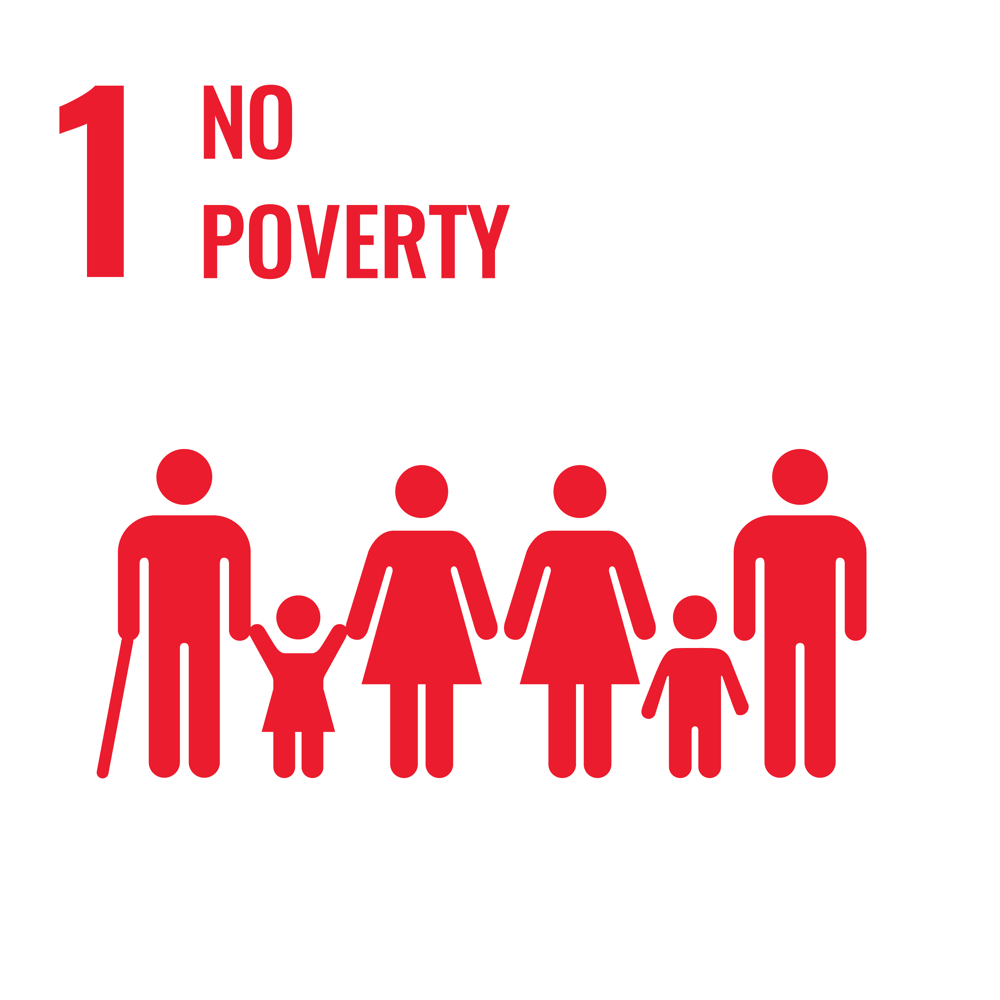
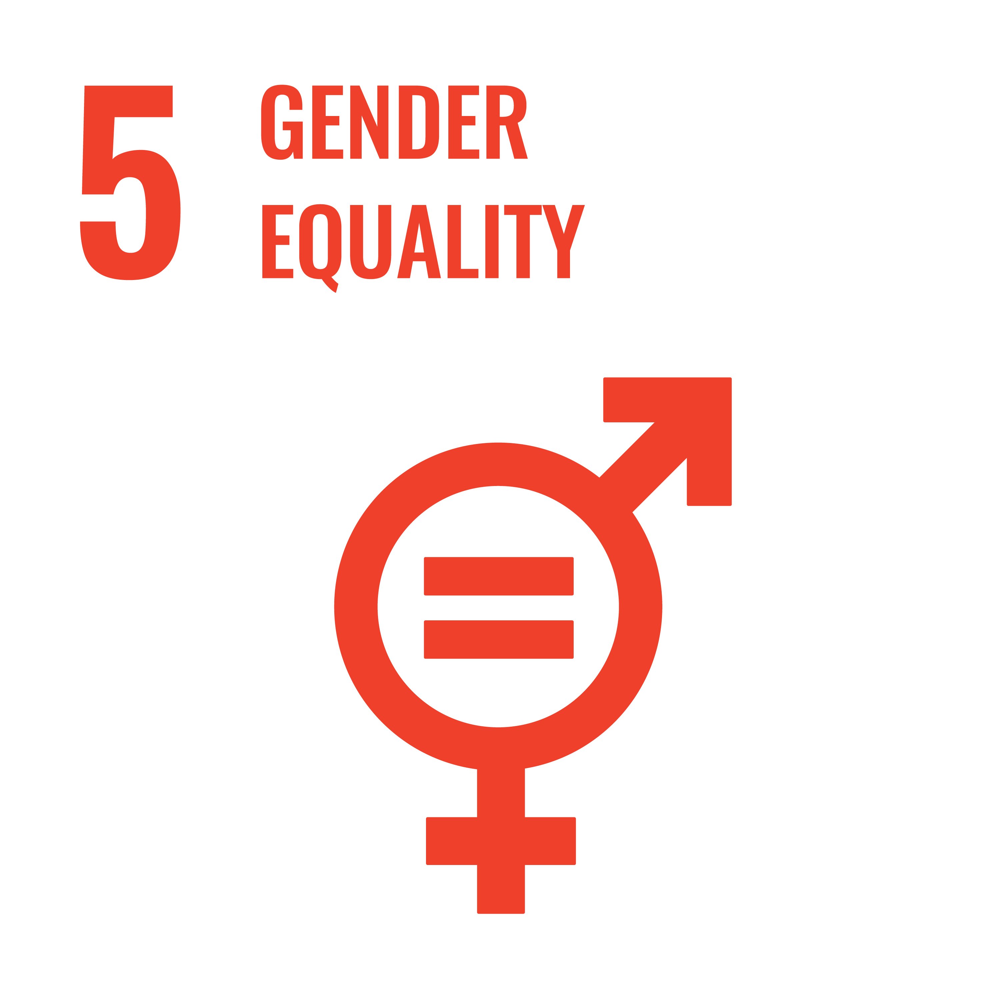
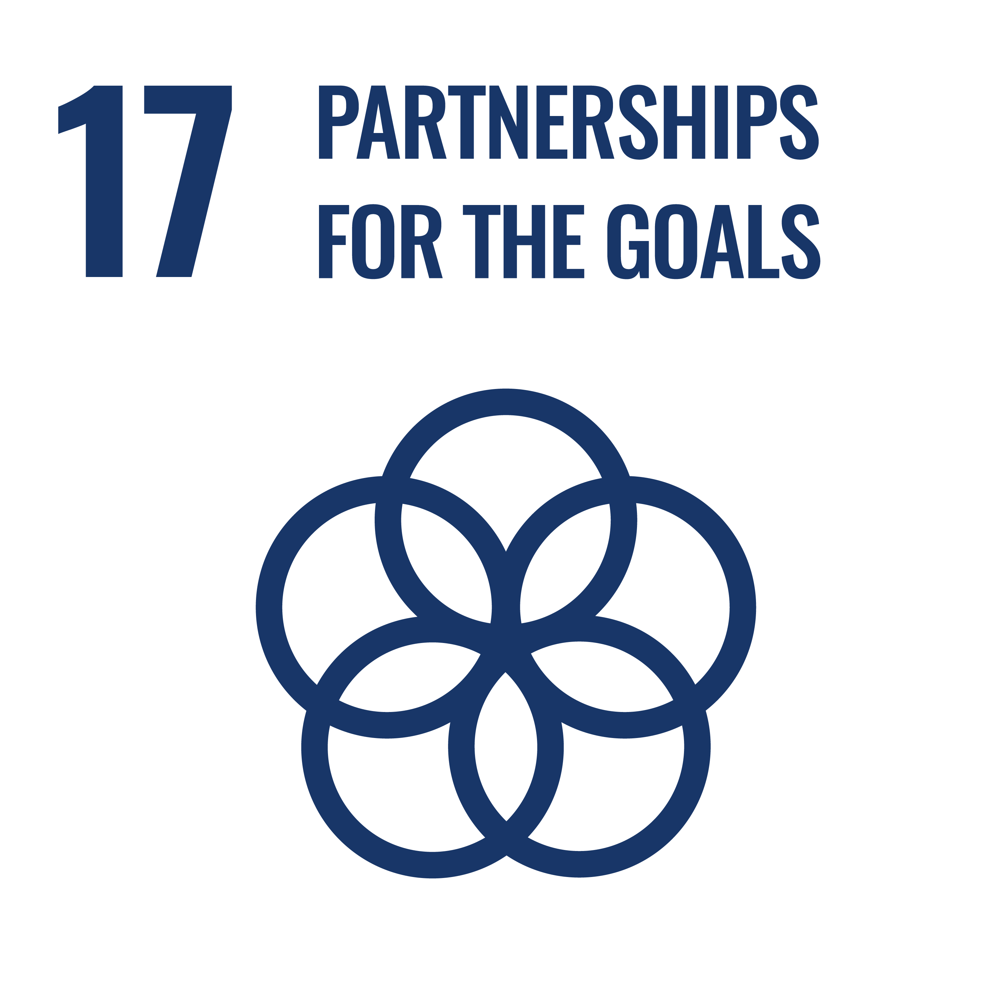
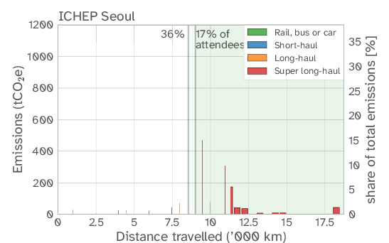
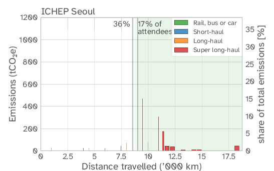

The climate crisis and the degradation of the world’s ecosystems require
humanity to take immediate action. The international scientific
community has a responsibility to limit the negative environmental
impacts of basic research. The HECAP+ communities
(High Energy Physics, Cosmology, Astroparticle Physics, and
Hadron and Nuclear Physics) make use of common and similar
experimental infrastructure, such as accelerators and observatories, and
rely similarly on the processing of big data. Our communities therefore
face similar challenges to improving the sustainability of our research.
This document aims to reflect on the environmental impacts of our work
practices and research infrastructure, to highlight best practice, to
make recommendations for positive changes, and to identify the
opportunities and challenges that such changes present for wider aspects
of social responsibility.
Version 1.0, 5 June 2023
Please read this document in
electronic format where possible and refrain from printing it unless
absolutely necessary. Thank you.
This work is licensed under the Creative Commons Attribution 4.0 International License (CC-BY 4.0). To view a copy of this license, visit http://creativecommons.org/licenses/by/4.0/ or send a letter to Creative Commons, PO Box 1866, Mountain View, CA 94042, USA.
Please cite this document as:
SustainableHECAP+ Initiative, “Environmental sustainability in basic research: A perspective from HECAP+”, 2023, available at: https://sustainable-hecap-plus.github.io/.
Individual endorsements of this document can be made at https://indico.cern.ch/e/sustainable-hecap-plus. To make an institutional endorsement, please email sustainable-hecap-plus@proton.me.
The acronym HECAP was adopted in the early stages of this initiative, otherwise in common use to refer to High Energy Physics, Cosmology and Astroparticle Physics1. With the subsequent inclusion of key contributions from the Hadron and Nuclear Physics community, with whom HECAP share common research infrastructure and common challenges in the pursuit of improved environmental sustainability, this acronym was modified to HECAP+. This modification is also intended to emphasise that many of the issues highlighted in this document apply broadly to all members of the basic research community.
This document has been converted from LaTeX using Pandoc. The font used is Atkinson Hyperlegible to maximise readability (see https://tug.org/FontCatalogue/atkinsonhyperlegible/).
The original PDF version of this document is available at: https://sustainable-hecap-plus.github.io/.
This reflective document was developed as part of a grassroots initiative Striving towards Environmental Sustainability in High Energy Physics, Cosmology and Astroparticle Physics.
Its focus is not to stipulate the research that our communities should undertake, nor to debate its intrinsic value. Rather, it is intended to be a synthesis of current data, best practices, and research in climate science and sustainability, as applied to our fields to the best of our ability as physicists, and a reflection on the roles that our communities can play in limiting negative environmental impacts due to our research work and scientific culture.
The scope of the document is inspired by the holistic approach of annual environmental reports of major institutes [1], [2], which include emissions directly related to research and collateral emissions, such as from personal commutes and institutional catering. Any imbalance in its content, in part, reflects imbalances in the availability of reliable data and resources relating to the environmental impact of aspects of our communities’ activities. Redressing this imbalance will require input from across our communities, in particular to identify the technical challenges of limiting the environmental impacts of our current and future research infrastructure.
While this document is primarily framed from the perspectives of high energy physics, cosmology, astroparticle physics, and hadron and nuclear physics (HECAP+), much of its discussion applies to basic research more generally. Its broad scope is intended to provide a first step toward greater coordination across the community in efforts to address environmental sustainability, and it is hoped that it may serve as a useful reference for our and other fields.
Comments on this document are welcome. Please get in touch with us via the online platform at: https://sustainable-hecap-plus.github.io/, where you will also find the latest version of the document. Individual endorsement of this document can be made at: https://indico.cern.ch/e/sustainable-hecap-plus. For institutional endorsements, please email us directly at sustainable-hecap-plus@proton.me.
Thank you for taking the time to read this document.
What should we do to limit the negative environmental impacts arising from our scientific community?
Productive discussions on this crucial issue are often hindered by a number of roadblocks. Climate change scepticism is fortunately not very frequent in our community, but the same cannot be said, for instance, of climate change whataboutism — “What about other communities who produce way more greenhouse gas emissions than us? Why should we make efforts, when others are not doing enough?”.
But even for those of us who recognize the importance of doing something, a general lack of data and detailed information often prevents us from aligning our actions with our ethical values — “Does my Carbon footprint increase more by flying to conferences a couple of times a year or by eating red meat a couple of times a week? By computing or by commuting?”.
This timely and thought-provoking paper, arising from the grassroots initiative Striving towards Environmental Sustainability in High Energy Physics, Cosmology and Astroparticle Physics, provides a much welcome reflection on how to remove these and other common roadblocks towards sustainability, and how to put in place concrete actions to limit our environmental impact.
The reader will find here a synthesis of current data, best practices, and research in climate science and sustainability, and a set of concrete recommendations that clearly show how we can empower individuals and the broader community to take direct action and responsibility for mitigating climate change.
I encourage every member of our community to reflect upon the contents of this document and to actively engage in the ongoing dialogue surrounding this crucial topic. I hope it will spark broader change and promote a culture of sustainability in our community and beyond.
Prof. Gianfranco Bertone
University of Amsterdam
Director, European Consortium for Astroparticle Theory
The conclusions from the IPCC are clear: global heating and climate change are an existential threat to human civilization. All aspects of society need to follow the recommended guidelines and eliminate greenhouse gas emissions as quickly as possible. The research fields of particle physics, cosmology and astroparticle physics have a role to play in this great transition. Not only are the emissions associated with those fields relatively large compared to other areas of daily life, but as researchers and scientists we understand the science and we can use our creativity and ingenuity in finding solutions. By placing sustainability at the forefront of our scientific approaches, we will provide guidance to other research fields and convey to society the importance of this topic. It is our duty to act now such that future generations can also enjoy the wonders of exploring the secrets of the universe. We used to pride ourselves with being great innovators at the cutting edge of technology. Let’s be ambitious again and help tackle all of the challenges associated with a net zero economy. In the process we will improve our health and make our research fields more diverse and accessible to all regions of the Earth. As scientists ourselves we can not ignore the science, there is a climate emergency and everyone needs to play their part.
Prof Véronique Boisvert
Centre for Particle Physics Group Leader at Royal Holloway, University
of London
Founder and Co-coordinator of the ATLAS Sustainability Forum
Co-coordinator of the Snowmass 2021 Topical Group: Environmental and
Societal Impacts
The climate crisis is one of the most pressing problems facing humanity today: the long-term survival of our species, and countless others, will be impacted critically by when and how we choose to address it. This is not an issue we can ignore or put off; action needs to be taken in the very near-term — the next few decades — if we are to avoid a critical rise in mean global temperature that is predicted to result in major changes to climate and weather patterns, the first signs of which we are already experiencing. Of course tackling such a monumental issue requires global collaboration and coordinated action by world governments. But as individuals, as well as via our memberships of teams, groups, institutes, laboratories and research organisations, each of us can, and must, take our individual responsibility for helping to ensure the vitality of our planetary environment and sustainability of its resources.
For those of us working in the scientific fields represented, this report provides a clarion call for action on sustainability. The report both draws attention to the environmental impacts of pursuing our scientific endeavours in a ‘business-as-usual’ fashion and, moreover, highlights actions that we can take to reduce significantly these impacts. In many cases these involve straightforward changes to behaviour and practice that will yield benefits almost immediately. In other cases more effort will be required and the benefits may be realised later. The point is: we owe it to ourselves to take action, and we can start now. This report is timely and it contains many constructive recommendations; the findings are widely applicable within the broader scientific community, and well beyond.
Philip Burrows
Professor of Physics, University of Oxford
Director, the John Adams Institute for Accelerator Science
In the context of the climate crisis, the scientific community is part of the solution — through research, teaching and evidence-based policy advice. However — and this aspect has traditionally been much less in focus — the scientific community is also part of the problem, through the emissions that it produces through its own operations. This report illustrates starkly, how large that problem is: for some researchers, emissions caused by their work are not just somewhat higher than the current average global per-capita emissions or the per-capita budget to 2050, they are roughly an order of magnitude higher (see Fig. 1.4, p. 17). In the face of such data, inaction can cost the HECAP+ community i) the credibility and trust it enjoys both from policy-makers and society at large, ii) the enthusiasm for HECAP+ topics that turns young students (many of whom care passionately about solving the climate crises) into next generation’s researchers and iii) even its research freedom, because it is likely that societal pressure will increase as the climate crisis progresses and policy makers will ultimately step in to regulate carbon-intensive sectors much more strictly.
Yet, there is ground for hope. As the report illustrates, there are already best practise examples that others in the HECAP+ community can learn from. Beyond the existing examples, the report provides actionable recommendations at three critical levels: the level of the individual, the level of research groups and the level of institutions. These three levels are necessary to achieve a change in culture towards a climate sustainable research community. Such a change in culture will happen, if individual behaviours and framework conditions (often set at the institutional level) that determine norms and incentives, change. The recommendations in this report provide first steps that the HECAP+ community can take to achieve this cultural change. Everyone in the community should read about, reflect on and, wherever possible, implement such steps.
Prof. Dr. Astrid Eichhorn
Professor in Theoretical Physics at the University of Southern
Denmark
Chair of the ALLEA (European Federation of Academies) Working Group on
Climate Sustainability in the Academic System
All of us have roles to play in combating the climate crisis that is bearing down upon us and the generations to come. Some of these roles are individual, such as our personal lifestyle choices, whereas others are collective, linked to our activities in society. As scientists studying fundamental physical laws, astroparticle physics and cosmology, our activities burden us with particular responsibilities. For example, the scales of our research facilities imply that we consume orders of magnitude more resources than is sustainable for the bulk of humanity, so we must strive to research as efficiently as possible. This implies minimising the wall-plug power and other resources consumed by our accelerators, experiments and data analyses. Moreover, the international nature of our research teams implies that we travel more than most, so we should strive to travel as sustainably as possible, e.g., by train, and as little as possible, e.g., by using teleconferencing tools such as Zoom or Teams. On the other hand, our research can provide humanity with valuable tools for living more sustainably. For example, the World-Wide Web, which CERN placed in the public domain 30 years ago, has enabled information to be shared and the planet’s business to be conducted more efficiently and therefore sustainably. Moreover, instruments that we develop can provide tools for monitoring and possibly mitigating the effects of climate change. Finally, through our international contacts we can both learn and disseminate best practice. Individually and collectively we have unique responsibilities and opportunities to follow the right paths: let us take them.
John Ellis
James Clerk Maxwell Professor of Theoretical Physics,
King’s College London, formerly at CERN
Climate change is the biggest challenge that humanity is facing today, and science is called on to help society in identifying measures to avert the environmental catastrophe that looms over our future. While science can provide solutions, we must recognise that scientific research is also part of the problem: our projects, infrastructures, computing facilities and work habits are energy-intensive and waste producers. More than ever, it is mandatory for scientists today to assess carefully the environmental impact of their activities and prove to society that even the most advanced scientific projects can be carried out in environmentally sustainable ways. This document lucidly presents the challenges, substantiating them with facts and data, and paves the way towards realistic and effective solutions. It testifies to the unrelenting commitment to societal and environmental problems deeply felt within the scientific community.
Gian Francesco Giudice
Head of the CERN Department for Theoretical Physics
In the past century the ever increasing resource demands of humans have a devastating impact on the climate of our planet. The resulting heat waves, droughts, strong rain falls, violent storms, melting ice and rising sea levels are posing an existential threat to many people world-wide already today, and even more in the future. This situation demands action from all of us individually, and as groups and institutions, to do whatever we can to reduce (or ideally eliminate) the emission of \(\mathrm{CO}_2\)(equivalent) gases, and more generally to preserve the resources of the planet. This report illustrates well that scientists working in the fields of high energy physics, cosmology, astroparticle physics, hadron and nuclear physics are using on average more resources than what will be acceptable, and action is needed immediately. Many recommendations are proposed for individuals, groups and/or institutions. Some are rather easy while others are challenging and require core habits to change. Given the very international nature of the research performed in these fields, there is a large potential to propagate the actions to 100s of institutions in countries of all continents and thereby increasing the impact further. I very much hope this document will help us embark on the right path.
Prof. Dr. Beate Heinemann
Director for Particle Physics at DESY, Professor of Physics at
Albert-Ludwigs-Universitaet Freiburg
former Deputy Spokesperson for the ATLAS Collaboration at CERN
Many of us who study astrophysics and cosmology do so out of a sense of awe and wonder at the universe. That same sense of wonder should compel us to consider the impact of our work on our planet. We work in areas that are driven by data, and the data on climate change shows clearly how humans continue to impact the climate. This extensive report presents a summary of the ways in which our work contributes to increases in emissions of greenhouse gases, collectively through our international projects and individually through personal choices. It is a sobering look at our impact, and provides recommendations for how we can effect change collectively within our research communities, collaborations and institutions.
International collaboration drives progress in the large, complex projects that we undertake to unravel the secrets of the cosmos. These projects often involve significant infrastructure investment and require a large computing budget. On the largest scale, the report challenges us to examine how we can reduce the environmental impact of the projects as a whole. This will require from us a renewed prioritisation of energy-efficiency, and strategic thinking to balance our research needs with these time-critical actions. At an individual level, it suggests ways to reduce impact on the climate by considering how we can reduce our international travel, while considering solutions that are inclusive of all members in our collaborations, regardless of geographic location. This will again require creativity — but I am confident that as researchers who have been trained in solving difficult problems we can rise to the challenge.
Renée Hložek
Associate Professor, Dunlap Institute and the Department of Astronomy
and Astrophysics at the University of Toronto
Spokesperson-elect of the LSST Dark Energy Science Collaboration
(DESC)
The challenges posed by the human-made climate crisis, the largest, most rapidly developing and pervasive threat to the natural environment and societies the world has yet experienced, are enormous. They are created by ever-growing human consumption, bolstered by rising energy production and its inefficient use and waste. This energy is predominantly generated by the massive combustion of fossil fuels, predictably leading to the greenhouse effect we are experiencing. While fossil fuels are the dominant source of greenhouse gases, direct release of these gases also contributes to global climate change. As scientists we have the responsibility to transparently expose the extent to which we we contribute to the problem, as discussed in this document, and help develop solutions. Among the biggest challenges for current experiments is the emission of greenhouse gases by detectors developed and built decades ago, in some cases using gases that were at that time thought to be environmentally-friendly alternatives to even more harmful gases. Energy efficiency throughout all our instruments, including considerations of their embodied carbon, is another important challenge. All these challenges require and receive our immediate attention. Future high-energy colliders and experiments will need to be ’green’: they will have to rely on decarbonated energy sources and employ detector technologies that avoid the use of greenhouse gases. I am confident that our field will meet these challenges and contribute to building a sustainable future.
Dr. Andreas Hoecker
CERN Research Physicist
Spokesperson, ATLAS Collaboration
Climate change does not necessarily threaten the survival of our planet in the bigger picture of the solar system and the universe; rather, it threatens our own survival and the survival of the bio- and eco-spheres that we rely on for our subsistence in this cosmos. We have no alternative planet which will provide for us, so we better not make our current one uninhabitable. Climate research has been clear on the effects of climate change, and slowly the rising sea levels, the disappearance of glaciers, the frequency of hundred year floods, the storms, droughts, and heat waves beat the message home: climate change is happening, human action is the cause, and we better counter-act it immediately. As fellow scientists from the areas of high energy physics, cosmology, and astroparticle physics, we are trained to understand and consider scientific results in our daily work. We know how to interpret statistics and draw conclusions from data. This document is a start to take the conclusions from climate research seriously and put them into action in our own fields of research. Collecting and reflecting on available results, together with recommendations for the implementation — from easy to hard — is an important first step, but only a first step. Let’s use this document and get started in transforming our field of research into a sustainable field of research — for the benefit of our planet and our own futures. The data has been clear for a while, now is the time to act on it.
Dr. Valerie Lang
Chair of the management board of the young High Energy Physicists (yHEP)
association, Germany
Researcher at the Albert-Ludwigs-Universitaet Freiburg, Germany
Member of the ATLAS Collaboration at CERN
The Intergovernmental Panel on Climate Change (IPCC) Working Group II in their Sixth Assessment Report (2022) underscored that “the science is clear. Any further delay in concerted global action [on climate change] will miss a brief and rapidly closing window to secure a liveable future”. We are also rapidly advancing towards the 2030 deadline to achieve the 17 Sustainable Development Goals: an international call to end poverty, protect the Earth and deliver peace and prosperity for all.
This report, which calls for climate and sustainability actions within the international scientific community, is both timely and welcome. It provides clear, actionable recommendations that can contribute to the collective effort to deliver positive changes across six key areas: i) Computing, ii) Energy, iii) Food, iv) Mobility, v) Research Infrastructure and Technology and vi) Resources and Waste. Ensuring both our science and the way we live are as sustainable as possible is an incredibly important undertaking, and scientists need to lead the way, and “walk the [sustainability] talk”. The global reach of this report offers a substantial opportunity to reorient the scientific community along a more sustainable trajectory. I encourage all who read it to commit to delivering its aspirations and best practices.
Prof. Dr. Lindsay C. Stringer
Professor in Environment and Development at the University of York,
UK
Director of the York Environmental Sustainability Institute, University
of York, UK
IPCC Scientist (Working Group II)
Humanity’s impact upon the world’s climate and ecosystems is now as unequivocal as it is extreme [3]. Averting this climate catastrophe must be a critical concern for all global citizens at this pivotal time in world history.
High Energy Physics, Cosmology, Astroparticle Physics, and Hadron and Nuclear Physics (hecap) research has direct impacts on the environment. Our research infrastructure, including accelerators, detectors, telescopes and computing resources, requires enormous power generation and, in many cases, contributes directly to greenhouse gas (ghg) emissions. Our work practices give rise to additional emissions, e.g., from procurement, business travel and commuting, and our industry generates various forms of waste that are harmful to the environment.
As scientists working in HECAP+ and related disciplines, our responsibilities to limit and mitigate our impact on the world’s climate and ecosystems are manifold. Our opportunities and training have given us the science capital to appreciate the evidence that has been collated over many years by climate and environmental science. We must use our unique and privileged platform to impel positive changes in, as well as educate and advocate on, environmental sustainability and the connected issues of social justice. Moreover, as a community focused on basic scientific research, we should be no less accountable for our impacts on the world’s climate and ecosystems than any other industry, and we should anticipate that our activities will come under increasing scrutiny from the public, governments and funders. We have moral and pragmatic obligations to act.
This document follows the holistic approach taken by several HECAP+ institutions in their annual environmental reports (see, e.g., Refs. [1], [2]) in assessing the environmental impacts of HECAP+ research across six areas: computing, energy, food, mobility, research infrastructure and technology, and resources and waste, also within the larger context of global emissions. Specific recommendations are made for each of these areas, but the overarching message is simple:
Assessing, reporting on, defining targets for, and undertaking coordinated efforts to limit our negative impacts on the world’s climate and ecosystems must become an integral part of how we plan and undertake all aspects of our research.
This requires urgent action at an individual level, at a group level (including research groups, collaborations and organising committees), and at an institutional level (including universities, research institutes, funding agencies, and professional societies). Moreover, it requires systematic positive changes in everything from our day-to-day activities and the ways we interact as a global community through to the design and running of the ‘big science’ infrastructure on which HECAP+ research depends.
It should be emphasised that the reduction of GHG emissions or other environmental impacts from any source identified in this report should be considered a priority by the community, whatever the comparative scale of these impacts. Carbon offsetting via legitimate providers (see Ref. [4]) should be seen as a last resort, used only once all other options for reducing the \(\mathrm{CO}_2\) equivalent (co2e) emissions have been exhausted and to offset any residual CO\(_2\)e output.
We urge all members of the HECAP+ and related communities to take individual actions and push for group- and institution-level changes that:
Establish community-wide formal and coordinated efforts to assess and improve the environmental sustainability of basic research, which calls for standardised reporting and data sharing.
Consider the environmental cost of computational infrastructure and algorithms in decision making and prioritise the development of common and reusable software solutions across HECAP+.
Prioritise the use of sustainable and renewable energy to power our workspaces and research infrastructure; increase their energy efficiency and recovery, and energy storage capacity.
Move towards plant-based catering at conferences and in cafeterias, immediately reducing the provision of carbon-intensive foods, such as ruminant meats and dairy products.
Prioritise environmentally sustainable modes of transport for commuting where possible.
Prioritise responsible business travel that balances in-person and online meetings, acknowledges the benefits of virtual and hybrid meetings for inclusivity, and considers the disproportionate impact of changes to travel culture on different groups, e.g., early career researchers and those who are geographically isolated.
Mandate comprehensive life-cycle analysis for all proposed research infrastructure projects that critically assesses the environmental impact of all project stages, including design and approval, construction, commissioning, operation, maintenance, decommissioning, and removal.
Prioritise environmentally- and socially-sustainable sourcing of raw materials for experiments and infrastructure.
Propagate and expand the culture of “reduce, reuse, repair, recycle”, including the implementation of life-cycle awareness and end-of-life planning for hardware.
Educate and advocate on issues of environmental sustainability and social justice, and engage more broadly with policy makers to push for wider change, e.g., the improvement and decarbonization of local transport infrastructure.
The aims of this document are:
To improve awareness of the impact that high energy physics, cosmology and astroparticle physics, and hadron and nuclear physics (hecap) has on the environment.
To provide suggestions and encourage immediate action on ways that we, as a community, can play our part in limiting further degradation of the world’s climate and ecosystems.
To provide impetus for ongoing and collective discussions of how we can make positive changes to our community’s work practices, in terms of environmental sustainability and for the issues of social justice from which climate change and environmental degradation cannot be disentangled.
The aims are not to stipulate the research that our communities should undertake, nor to debate its intrinsic value.
The discussions are divided into seven sections. Sections 2 through 7 cover the topics of Computing, Energy, Food, Mobility, Research Infrastructure and Technology, and Resources and Waste. Each of these sections contains a set of recommendations, for individuals, groups and institutions, and these are followed by longer discussions that include case studies and best practice examples, which can be read independently of the surrounding material. Collated lists of acronyms and abbreviations, best practices, case studies, and figures and tables are included at the end of this document.
Section 1, Preliminaries, begins by acknowledging the climate crisis and the environmental impacts of HECAP+ research. It provides a summary of the United Nations (UN) Sustainable Development Goals (sdgs) and how these relate to HECAP+ research, and briefly reviews similar and complementary documents.
The 2021 report of the Intergovernmental Panel on Climate Change (ipcc) [5] is emphatic in its statements about the current status of the climate and the damaging impact that humanity continues to have upon it [3]:
"It is unequivocal that human influence has warmed the atmosphere, ocean and land. Widespread and rapid changes in the atmosphere, ocean, cryosphere and biosphere have occurred. […] Human-induced climate change is already affecting many weather and climate extremes in every region across the globe. Evidence of observed changes in extremes such as heatwaves, heavy precipitation, droughts, and tropical cyclones, and, in particular, their attribution to human influence, has strengthened since [the Fifth Assessment Report in 2014]."
It is also clear on the consequences of further inaction [3]:
"Global surface temperature will continue to increase until at least mid-century under all emissions scenarios considered. Global warming of 1.5C and 2C will be exceeded during the 21\(^\text{st}\) century unless deep reductions in \(\mathrm{CO_2}\) and other greenhouse gas emissions occur in the coming decades. […] Many changes in the climate system become larger in direct relation to increasing global warming. They include increases in the frequency and intensity of hot extremes, marine heatwaves, heavy precipitation, and, in some regions, agricultural and ecological droughts; an increase in the proportion of intense tropical cyclones; and reductions in Arctic sea ice, snow cover and permafrost."
Net global co2e emissions must be halved before 2030 to fulfill the Paris Climate Agreement. Without this, we are unlikely to meet the target of limiting global warming to 1.5C in order to avoid fatal tipping points in the global biosphere (see Figure 1) [6]. Pledged policy changes by nations party to the Paris Agreement, known as Nationally Determined Contributions, are insufficiently far-reaching, and “make it likely that warming will exceed 1.5 during the 21st century” [7] (original emphasis). Demand-side mitigation, including changes in infrastructure use and social and behavioural practices, can reduce global ghg emissions in end-use sectors by 40-70% by 2050 [8].

Oxfam’s recent publication "Confronting carbon inequality" [9] notes a strong correlation between GHG emissions and income level, with the world’s wealthiest 10% accounting for over half of cumulative global emissions (see Figure 2 for infographic). This income bracket, corresponding to an average annual income of over €34,000, includes many HECAP+ physicists, and was identified by the IPCC as having “the greatest potential for emissions reductions, e.g., as citizens, investors, consumers, role models, and professionals” [8]. See Inset [personal] for a summary of individual climate actions ranked by impact, based on Ref. [10].
Figure 3 presents a breakdown of 2016 global GHG emissions by sector, with the emissions at the European Organization for Nuclear Research (cern) for 2019, during the Large Hadron Collider (lhc) shutdown, shown as a proxy for research emissions.3 CERN, like other HECAP+ institutions, categorises its emissions by scope rather than sector, making a direct comparison difficult. Instead, we consider total per-capita emissions, dividing CERN’s emissions equally amongst its seventeen thousand Users (scientists involved in CERN-based research), to obtain roughly 15 tco2e per researcher per annum, or twice the global average of 6.3 tco2e. Note that this does not include personal household emissions for researchers, which may exceed their workplace emissions. It also incorrectly assigns some emissions due to CERN’s smaller cohort of direct personnel, e.g., due to CERN-funded travel or personal computing equipment, to its entire User base.
For a fairer accounting, see Figure 4. This chart attributes reported work-related emissions in each sector to the ‘true’ consumers of each resource, for researchers at CERN as well as four other HECAP+ institutions, the Max Planck Institute for Astronomy (mpia) in Heidelberg, Germany, the Department of Physics (dphys) at eth, nikhef in the Netherlands, and Fermilab in Chicago, USA (fnal). For raw data and details of underlying methodology, see Appendix 9. Note that these institutions are somewhat self-selected, counting among the minority that have published quantitative estimates of their environmental footprint. Since CERN is the only institution on this list that attempts a full accounting of its Scope 3 emissions, the numbers in this chart should be taken as indicative only, and caution should be employed in making comparisons across institutions on this basis.4 It is nevertheless evident that work-related emissions for many of HECAP+ researchers far exceed our remaining budget to stay within 1.5C of warming [3].5
These work-related emissions are due to choices we make, as individuals, collaborations, or institutions. They could be a direct consequence of HECAP+ research, such as the choice of detector design; computing setup or software pipeline for simulation and analysis; or how we collaborate or communicate the results of our work. Alternatively they could be peripherally related to the science we do: e.g., how we commute between our home and workplace, or the food we consume while at work; or how our offices are powered, heated and ventilated. Historically, many of these choices have been made prioritising cost or convenience over environmental and social impact. However, the rapid and systemic societal change needed to keep to our climate change goals requires system-wide engagement at all levels of academia. We can impel positive change throughout the academic research system by re-assessing these choices and how central they are to our primary function as scientists.
This process has already begun. Universities and other institutions are including sustainability in buildings planning (see Best Practice [BP:Nikhef]) and engaging with voluntary assessments of the environmental sustainability of their research facilities (see e.g., Refs. [1], [2], [17]–[19]). Examples focussed on the environmental sustainability of laboratories include France’s Labos1point5 (see Best Practice [BP:l1p5]) and University College London’s Laboratory Efficiency Assessment Framework (LEAF) initiative [20], [21], a standard being adopted across an increasing number of universities [22]. The LEAF initiative, which awards three levels of certification to participating laboratories, is structured around online tools that promote best practice, and aid calculations of impact and reporting, as well as additional resources and training opportunities for staff and students.
Best Practice : Nikhef renovation and sustainability
plan
Nikhef is the Dutch National Institute for Subatomic Physics in the
Netherlands. It is both a consortium of universities and an institution
with a building in Amsterdam. The total \(\mathrm{tCO}_2\mathrm{e}\) footprint of
Nikhef was 1,082 \(\mathrm{tCO}_2\mathrm{e}\) in 2019,6 three quarters of which is due to
flying to conferences and laboratories, and 15% is due to heating the
building with natural gas [19]. The building is undergoing a major
renovation in 2021–2023, which will remove the need for gas for heating.
Instead, the heat from the nearby data centre will be used, in addition
to better thermal insulation of the building.
The Nikhef sustainability roadmap [19] covers all sources of direct and indirect carbon emissions. For instance, by 2030, air travel should be reduced by 50% and daily commuting should be climate-neutral. Intermediate targets for 2025 are also set and yearly emissions will be monitored and reported.
Inset : Personal emissions

Figure 5 shows the conclusions of a recent meta-study from Lund University [10], in which individual climate actions were ordered by impact. Note that the authors assume “average conditions in developed countries”, so miss the substantial differences between emissions levels in developing and developed nations. They also neglect the effects of climate policy. For one estimate of how national climate policies might modify the ordering, see Ref. [23]. This figure highlights the disconnect between the moderate-impact measures (right-most five bars) that consumers are commonly encouraged to take, and the high-impact measures (left-most seven bars) that pertain to more complex and nuanced issues.7 A full discussion of these issues is beyond the scope of this document.
This document is focused on environmental sustainability and associated social justice issues of particular relevance to the activities of HECAP+. It is important to acknowledge the attention that these topics are rightly being given across our communities. This includes, e.g., in conference plenary talks and in parallel tracks devoted to sustainability, and equity, equality, diversity, inclusivity and accessibility. This section provides a brief review of other documents with similar and complementary focuses on environmental and wider social responsibilities.
The All European Academies (ALLEA) Working Group on Climate Sustainability in the Academic System published a report in May 2022 [26], the aim of which is "to assess current practices and to critically examine current and proposed measures." The document urges stakeholders — either individual (researchers and students) or structural (universities, funding bodies, conference organisers, ranking agencies, and policy makers) — to know their roles and responsibilities toward a climate-sustainable academic system. After summarizing available data on GHG emissions from various stakeholders and reviewing the current practices aimed at reducing those emissions, the report outlines recommendations for individual and group stakeholders. Dimensions of social justice and equity are among the principles underlying all recommendations, as well as the opportunity for the academic system to be a role model in the matter. While all group stakeholders are advised to embed sustainability in their strategies, individual ones differ: students and academic members are encouraged to hold university management accountable, to demand divestment and to generate awareness. The importance of the development of an evidence base is emphasised, along with mix-and-match approaches to meeting formats. Finally, stakeholders are pushed to allocate funding to the decarbonization of the academic system.
The report "Climate impacts of particle physics" [27], submitted to the proceedings of the US Community Study on the Future of Particle Physics (Snowmass 2021) focuses on facility construction, detector gases, computing, and GHG emissions from particle physics laboratories. The report highlights two key motivations for addressing the ecological and climate impacts of particle physics: (i) that the particle physics community has a moral obligation to do so and (ii) that its professional activities will be under increasing scrutiny from a number of stakeholders. The latter means that the community will be under increasing pressure to justify its carbon emissions against its relative size, compared to other industries, and its societal benefits.
As a concrete example, the report focuses on the Future Circular Collider (FCC) — the proposed 100 TeV electron-positron (and later hadron) collider. The authors estimate that the construction of the roughly 100 km circumference tunnel alone would lead to \(\mathrm{CO}_2\) emissions at the level of a few hundred kilotons, several times more than other large US building projects. This corresponds to "per physicist" emissions 80 times larger than their estimated 1.1 tco2 per capita per year limit needed to keep global warming to less that 1.5C. The authors emphasise the significant impact of the GHGs used in particle physics detectors and for cooling, which can have warming potential that exceeds that of \(\mathrm{CO}_2\) by as much as four orders of magnitude (in the case of \({\rm SF}_6\)). The report then highlights a number of avenues for reducing the GHG emissions due to the electricity consumption of computing, which is pivotal to running and exploiting such facilities. It also discusses the additional emissions due to collaborative research activities, with a particular emphasis on taking careful steps to reduce air travel that capitalise on potential benefits for social justice while minimising unintended negative consequences for members of the community.
The report’s recommendations stress the need for reporting on planned emissions and energy usage for new facilities; standardised reporting of emissions across the sector, and community-wide engagement to tackle the negative climate impacts of particle physics research through dedicated research time.
The young High Energy Physicists (yHEP) association in Germany published the "yHEP recommendations on improvement of environmental sustainability in science" [28] and its Addendum [29] in December 2020 and 2021, respectively. The documents, which were the result of proposals from the yHEP community, including HECAP, hadron and nuclear, and accelerator physicists, contain ideas for improving the environmental sustainability of basic research. They take a qualitative approach on a broad range of topics, including, but not limited to, travel, conferences, computing and infrastructure, resource management and financing, and green energy.
The aim of this document is to provide as comprehensive a discussion as practicable of the various impacts of HECAP+ research, from our day-to-day activities through to the large infrastructure projects on which our science depends. The discussions presented here have much in common with those of the documents described in Section 1.2. This document is, however, intended to have broad scope and, through case studies and best practice, to illustrate potential actions that can be implemented at individual, group and institutional levels to limit the impacts of HECAP+ research on the world’s climate and ecosystems.
However, if the HECAP+ community is to succeed in improving the sustainability of its working practices, then the environment and related issues of social justice must be recognised as integral parts of the planning and management of our research activities. With this in mind, we collect below a list of recommendations for structural changes to the organisation of our community, our training and our professional development.
These recommendations complement those listed in the discussions of specific sources of environmental impacts of HECAP+ research on which the bulk of this document focuses. Together, these provide concrete suggestions of ways in which the HECAP+ community can act to reduce its negative climate and ecological impacts, and address issues of social justice in line with the United Nations Sustainability Goals, discussed in the next subsection.
Individual actions:
|
|
Further group actions:
|
|
Further institutional actions:
|
|

As a global research community, HECAP+ has an impact on society all over the world. We contribute to basic scientific knowledge, drive innovation and promote international collaboration. Our institutions are large employers, large consumers of goods and services, and a key resource in the training and development of national skills bases. This places our institutions in a position to influence policy decisions, drive investment in local infrastructure, and leverage wider improvements to social and environmental standards. For these reasons, the HECAP+ community is in a strong position to support the UN Sustainable Development Goals (SDGs), summarised in Figure 6.
The topics discussed in this document are meant to support a multiplicity of these goals, and we aim to signpost the influence of our work in all aspects. The goals are listed below, with examples of how each is impacted by the HECAP+ research community and its work. The SDGs are defined in UN resolution A/RES/70/1 in detail [31]. It is impossible to cover all aspects in this document, but the manifold impact of the HECAP+ community on sustainable development is clear from this non-exhaustive list.
 Goal 1: No poverty — End poverty in all its forms everywhere
The contractual and payment standards in employment contracts of institutes and collaborations influence their employees’ lives.
The terms of contract with external companies influence the working and living conditions of their employees.
Goal 2: Zero hunger: End hunger, achieve food security and improved nutrition and promote sustainable agriculture
The food consumed at institutes and events has an effect on the behaviour of the food market/industry from which it is purchased.
 Goal 3: Good health and well-being: Ensure healthy lives and
promote well-being for all at all ages
Goal 3: Good health and well-being: Ensure healthy lives and
promote well-being for all at all ages
HECAP+ research helps to develop medical diagnostics and treatments, e.g., for cancer.
The working culture practised every day has an impact on the mental health of ourselves and co-workers.
The design of experimental setups has an effect on (work) safety issues.
Food served and consumed at institutes and events has an impact on the health and well-being of the consumers.
 Goal 4: Quality education: Ensure inclusive and equitable quality
education and promote lifelong learning opportunities for
all
Goal 4: Quality education: Ensure inclusive and equitable quality
education and promote lifelong learning opportunities for
all
Research develops and uses scientific methods to establish a general body of knowledge that can be passed on in educational settings.
Researchers are often teachers for their respective field and have an effect on the teaching culture.
Researchers and institutes, through their conduct and integrity, have an impact on the credibility of science in society.
Transparent reporting on efforts towards more sustainable research has a positive impact on the credibility of scientists, and helps avoid greenwashing.
 Goal 5: Gender equality: Achieve gender equality and empower all women and girls
As an historically male-dominated field, HECAP+ should strive to act for the visibility, acceptance and representative participation of all genders.
 Goal 6: Clean water and sanitation: Ensure availability and
sustainable management of water and sanitation for all
Goal 6: Clean water and sanitation: Ensure availability and
sustainable management of water and sanitation for all
Our research requires the use of water for various purposes (heating, cooling, cleaning, sanitation, food production and preparation, etc.). Its sources are affected by our needs and behaviour.
HECAP+ research creates waste water. The treatment of this has an impact on the water quality in the linked aquatic ecosystems.
The behaviour and lifestyle choices of our community in professional and private life have an impact on the water needs in the surrounding and indirectly linked area.
Goal 7: Affordable and clean energy: Ensure access to affordable, reliable, sustainable and modern energy for all
The sources of energy planned and used for institutes, accelerators and experiments have an environmental impact on a global level.
The high consumption and the resulting financial impact of research facilities have an impact on the energy market.
 Goal 8: Decent work and economic growth: Promote sustained,
inclusive and sustainable economic growth, full and productive
employment and decent work for all
Goal 8: Decent work and economic growth: Promote sustained,
inclusive and sustainable economic growth, full and productive
employment and decent work for all
The terms of employment contracts and working culture in HECAP+ research influence employees’ living conditions.
Goal 9: Industry, innovation and infrastructure: Build resilient infrastructure, promote inclusive and sustainable industrialization and foster innovation
Innovation is at the core of HECAP+ research.
Institutes influence the local infrastructures on which they rely and construct infrastructure for research.
Industry and HECAP+ research are linked as knowledge and products are transferred. This transfer can be shaped actively.
 Goal 10: Reduced inequalities: Reduce inequality within and among
countries
Goal 10: Reduced inequalities: Reduce inequality within and among
countries
Research facilities that span multiple nations have the ability to impact the inequalities between the involved countries. They can also set examples for countries which are not (yet) involved.
Goal 11: Sustainable cities and communities: Make cities and human settlements inclusive, safe, resilient, and sustainable
The campuses of research facilities have an impact on the cities and neighbourhoods in which they are built.
The behaviour and lifestyle choices of our community in professional and private life have an impact on our local communities.
 Goal 12: Responsible consumption and production: Ensure sustainable
consumption and production patterns
Goal 12: Responsible consumption and production: Ensure sustainable
consumption and production patterns
The facilities, accelerators, machines, and experiments we build use up resources and energy in their design, construction, overall lifetime (e.g., maintenance) and disposal.
The disposal of obsolete equipment and other waste generated by the work we do has an impact on our environment.
Our daily choices on consumption have a wider effect on the systems which produce them, e.g., food and travel.
 Goal 13: Climate action: Take urgent action to combat climate
change and its impacts*8
Goal 13: Climate action: Take urgent action to combat climate
change and its impacts*8
The emission of various gases by HECAP+ research has an impact on the Earth’s climate.
The sources of the electrical and thermal energy used by HECAP+ facilities impact the global climate.
The behaviour and lifestyle choices (eating, travel, product consumption) of our community in professional and private life have an impact on the global climate.
 Goal 14: Life below water: Conserve and sustainably use the oceans,
seas and marine resources for sustainable development
Goal 14: Life below water: Conserve and sustainably use the oceans,
seas and marine resources for sustainable development
Some of the HECAP+ experiments and facilities are built within or close to aquatic ecosystems, e.g., Antarctica, and therefore affect these both directly and indirectly.
Many goods, products and experiments used in research are travelling the oceans prior to use.
The industries that produce the goods that we consume use water and produce waste products, some of which ends up in the ocean.
The behaviour and lifestyle choices of our community in professional and private life have an impact on the oceans, through the demand for clean water, and the production of waste water and residues, including microplastics.
 Goal 15: Life on land: Protect, restore and promote sustainable use
of terrestrial ecosystems, sustainably manage forests, combat
desertification, and halt and reverse land degradation and halt
biodiversity loss
Goal 15: Life on land: Protect, restore and promote sustainable use
of terrestrial ecosystems, sustainably manage forests, combat
desertification, and halt and reverse land degradation and halt
biodiversity loss
Campuses are ecosystems.
Expanding the campuses of research institutes can have an impact on surrounding ecosystems.
Our consumption has direct (e.g., deforestation for agriculture and construction) and indirect (e.g., our emissions give rise to more frequent extreme weather events) effects on land use, damaging ecosystems.
The behaviour and lifestyle choices of our community in professional and private life have an impact on the land and its ecosystems, because of the extraction of resources and the production of waste or residues.
 Goal 16: Peace, justice and strong institutions: Promote peaceful
and inclusive societies for sustainable development, provide access to
justice for all and build effective, accountable and inclusive
institutions at all levels
Goal 16: Peace, justice and strong institutions: Promote peaceful
and inclusive societies for sustainable development, provide access to
justice for all and build effective, accountable and inclusive
institutions at all levels
HECAP+ is an international field demonstrating harmonious partnership in working towards common goals, and can serve as a model for peaceful international collaboration.
HECAP+ is part of society, and it is composed of institutions that can help shape the societies and politics within which they are embedded.
Large-scale HECAP+ projects can have a positive impact on industrial and political partnerships.
Transparent reporting on efforts towards more sustainable research has a positive impact on the credibility of scientists, and helps avoid greenwashing.
 Goal 17: Partnership for the Goals: Strengthen the means of implementation and revitalize the global partnership for sustainable development
As an international community based on research and a driver for innovation, we can influence our partners and work together to strengthen a sustainable society around the globe.
Computing represents an integral part of basic research, being used for theoretical modelling, simulation (including lattice simulation), and data analysis. With increasing data sets and demands for accuracy, computing resource consumption is expected to rise. This poses concerns in the context of climate sustainability. Within hecap, e.g., the High-Luminosity phase of the Large Hadron Collider (hl-lhc), predicted to be operational from 2026, is expected to rely on 50 to 100 times the computing capacity needed for the Large Hadron Collider (lhc), with data storage requirements reaching exabytes [32]. At the same time, some lattice quantum chromodynamics (QCD) calculations, applied, e.g., to studying heavy quark decays and anomalous magnetic moments, can be too expensive to pursue, even if approximately 10% of open-science super-computing in the United States is devoted to such studies [33]. Up to 88% of the electricity consumption of an astronomy researcher at mpia, shown in Figure 4, is due to (super)computing [17], and cern’s (now defunct) data centre in Hungary is responsible for a third of its electricity emissions when the LHC is not running [1].9
HECAP+ research infrastructure ranges from local and portable computing, to high-performance computing (hpc) and high-throughput computing (htc)10 in centralised computing centres that — depending on the application — deal with large volumes of experimental data. As an international community, we also rely on communication technologies and the ability to move these large volumes of data around the globe. The infrastructure we use to do so, comprising hardware, the data centres within which the hardware is housed, and cloud computing resources used for data storage, contributes to our community’s energy consumption and the waste that our research generates. Furthermore, the energy efficiency of hardware is ultimately limited by the efficiency of the computer programmes that run on this hardware, making the ghg emissions of HECAP+ researchers dependent upon the choice of software architecture.
This chapter covers sustainability in procurement, and extending and optimising the life-cycle of computing equipment in Section 2.1, choice and optimisation of software in Section 2.2, and energy savings in data centres in Section 2.3. For a full discussion of sustainable sourcing in a broader context, as well as information on E-waste and its impact, see Section 7. A brief explanation of the life-cycle analysis used to estimate the cradle-to-grave environmental impact of infrastructure and technology can be found in Section 6. For other aspects of energy use, see Section 3.
Individual actions:
|
|
Further group actions:
|
|
Further institutional actions:
|
|
When considering the future of sustainability in HECAP+, the hardware aspect of computing is of great concern. Hardware is both energy- and resource-consuming. The manufacture, transport, energy consumption, and disposal of each piece of hardware contribute substantially to the environmental footprint of the HPC that HECAP+ relies on to analyse large swathes of data.
Manufacture is the largest source of hardware GHG emissions, with primarily fossil-fuel-powered manufacturing chains contributing as much as 80–85% of lifetime emissions of a personal computing device [34], [35]. Moreover, production is notoriously resource-intensive [34], with the mining of the necessary metals and ‘conflict’ minerals responsible for a number of negative environmental and social effects. Improper disposal of substances found in computing equipment is also linked to environmental hazards and a variety of other risks. For an in-depth discussion, see Section 7.
One way to mitigate the impact due to production is by purchasing modular equipment, which allows for easy upgrades and repurposing of hardware. In fact, the extension of hardware lifetime has been increasingly demonstrated to have major benefits over upgrading to more efficient technology. A study by the University of Edinburgh Department for Social Responsibility and Sustainability [36] found that simply using 174 computer monitors for six years instead of four saved 33 tco2e, which, when incorporated into standard practice, would not only reduce purchasing costs, but would result in annual GHG savings of 380 \(\mathrm{tCO}_2\mathrm{e}\). It is also crucial that institutions be able and willing to support repairs. This applies in particular to personal equipment, e.g., laptops, which come with additional peripherals such as display, keyboard, and housing, as compared with HPC units in data centres.
Furthermore, prioritising suppliers that implement sustainable sourcing, including recovery of secondary materials, and manufacturing methods would partially mitigate the resource burden, as would enabling circularity and appropriate E-waste recycling. As one example, TCO certification [37] is the world-leading sustainability certification for IT products, such as those supplied by Lenovo, Dell, or Acer. TCO-certified compliance is independently verified both pre- and post-certification. TCO certification also covers data centre products, which could be given preference over uncertified ones for cluster computing. For more information on sustainable procurement, including some hallmarks of sustainability in raw materials supply chains, see Section 7.1. For further discussion of E-waste, see Section 7.2.
A secondary source of hardware emissions is energy consumption during its use [34], with the majority coming from processors, memory, and runtime of jobs. Processor upgrades and the optimisation of memory type can greatly reduce energy consumption. See Case Study [case:LHCb] for details of energy-efficient hardware purchase at the Large Hadron Collider beauty experiment (lhcb).
It is important to ensure ‘energy proportionality’ in hardware use, i.e., that energy consumption is proportional to computing performance over the full range of applications [38]. Often, hardware designed to be most efficient at maximum performance load in practice spends most of its time idle, or performing less intensive computations. This can be addressed by, e.g., running jobs at high utilization rate on as few servers as possible.
Implementing parallelisation within processors can also reduce the number of processors needed, and by replacing central processing units (cpu) with graphics processing units (gpu), the energy usage can be reduced. For certain tasks relevant to HECAP+ applications, other even more specialised processors are available, such as Google’s tensor processing unit (TPU) [39]. This consumes less power than its predecessors, although it suffers from poor energy proportionality: at 10% load, it consumes almost 90% of the power it would consume at 100% load [40].
However, it should always be tested whether parallelisation does reduce the overall energy usage of a task, as an increase in energy consumption per second could counteract the benefits of reduced runtime. Another aspect to take into consideration when implementing parallelisation is the particular application, and its requirements in terms of memory, scalability, and data access. Reference [41] discusses these issues in the context of the Worldwide Large Hadron Collider Computing Grid (WLCG). It also gives suggestions for power-aware software applications and scheduling that could reduce power consumption. Some of the advocated changes are software specific and are further detailed in Section 2.2. The Green500 list [42] ranks the most energy efficient high-performance computing systems. The GHG emissions of the computer centres that house them, however, depend critically on their infrastructure. This aspect is further discussed in Section 2.3.
Software is integral to the work of HECAP+. It underpins how the global HECAP+ community communicates, shares data, produces papers and graphics, and acquires, manages, processes and analyses huge amounts of data from experiments, observatories and simulations.
It is therefore pivotal that the software developed and used by the HECAP+ community is efficient in order to minimise CPU hours, and to facilitate data sharing and long-term reproducibility. This requires a balance to be struck between portability and optimisation for particular architectures. While not directly linked to environmental sustainability, initiatives focused on software sustainability in HECAP+, such as the Institution for Research and Innovation in Software for High Energy Physics (IRIS-HEP) [43] and the hep Software Foundation [44], may provide an important platform for accelerating the inclusion of environmental considerations in software development. Doing so is compatible with the FAIR principles [45] for scientific data management, that software (and data) should be Findable, Accessible, Interoperable and Reusable.
Much of the code used in HECAP+ computing relies on libraries and public codes. Experiments use general frameworks and software infrastructure provided by experts in the experiments. They can have a tremendous impact on the energy efficiency of the employed code and, in some cases, work to meet strict requirements posed by the computing environment. Decisions on the computing language employed can be crucial, with Fortran and C++ specifically suited for numerical calculations, whilst others prioritise convenience or readability over performance. Changes in processor architecture have been utilised through dedicated and collaborative efforts, leading to a factor of 2 improvement in the performance (and energy efficiency) of the reconstruction code of the ATLAS experiment at CERN [46]. Other examples of software improvement are recent changes to the software framework and architecture at LHCb (see Case Study [case:LHCb]) and improvements in a Monte Carlo (MC) generator core code, having led to an improvement in speed of a factor of 50 (see Best Practice [CS:SoftwareOptimisation]). In the case of cosmological analyses, it has been suggested that the Likelihood Inference Neural Network Accelerator (LINNA) can lead to efficiency increases that would save $300,000 in energy costs and around 2,200 \(\mathrm{tCO}_2\) in first-year Rubin Observatory’s Legacy Survey of Space and Time (LSST) analyses [47].
Sustainable use of software can also be encouraged at an individual level. The energy used in a job directly correlates with the memory assigned/available for a job, so mitigation by individuals can be easily implemented through assigning the correct memory used and by optimising code [48]. Further examples of conscientious use of software include limiting resolution or precision to that which is necessary, effective testing to avoid wasted CPU hours, good practice in data retention to avoid data loss and the need to rerun analysis or simulations, and scheduling CPU hours when a higher percentage of the local energy mix is from renewables.
Best Practice : Optimization of software
A targeted effort enabled by the UK-based SoftWare and InFrastructure
Technology for High Energy Physics (SWIFT-HEP) [49] project recently brought together
experimentalists and Monte Carlo (MC) developers to greatly improve the
computational efficiency of multi-leg next to leading order calculations
by focussing on two major components of general purpose MC event
generators: The evaluation of parton-distribution functions along with
the generation of perturbative matrix elements. A dedicated CPU
profiling illustrated that for the cost-driving event samples employed
by the ATLAS experiment to model irreducible Standard Model backgrounds,
these components dominate the overall run time by up to 80%. Improved
interpolation and caching strategies in LHAPDF [50], the main evaluation tool for
parton-distribution functions used by the experiments, along with the
introduction of a simplified pilot run in the MC generator Sherpa [51] for the unweighting
achieves a reduction of the computing footprint by factors of around 50
for multi-leg next to leading order event generation, while maintaining
the formal accuracy of the event sample [52]. The speed-up translates into
a direct CPU (and hence energy) saving, paving the way towards
affordable and sustainable state-of-the-art event simulation in the
HL-LHC era.
Even the most energy-efficient data centres are not environmentally sustainable if they are powered by carbon-based fuels [27]. However, provided energy from renewable sources is available, this can be easily addressed. Indeed, there are many advantages to doing so, owing to the flexibility of HTC Inherent fluctuations in supply of electricity from renewables can be managed using a smart queueing system that runs jobs at times where electricity has a large renewable component, or directs them to data centres where this is the case. Moreover, a carefully-managed HTC system can even help stabilise fully-renewable power grids in response to local imbalances in supply and demand: an instantaneous reduction in the CPU clock frequency by up to 60% ensures per-second grid stabilisation, and a similar technique can be employed on longer time scales, e.g., hourly, in response to changes in the carbon intensity of electricity (or equivalently, market price). For longer periods, with higher latency, this can also involve powering down nodes. The reduced work can be compensated by operating older hardware longer, but only when the electricity price is low. See Section 3.1 for further discussion of renewables-based grid infrastructure.
Another source of GHG emissions associated with computing is the construction and operation of the large data centres within which IT equipment is housed. Although emissions due to construction can be significant, particularly if concrete is used, our focus in the remainder of the section will be on cooling the facilities and equipment, which is responsible, on average, for almost one third of facility power use. A judicious choice of location for the centre can minimise these energy costs, by provision of a cooler external environment, or other means to cool efficiently. Proximity to a large body of water, e.g., could make water cooling an attractive option. Care must be taken, however, to ensure minimal disruption to the natural environment. Waste heat from the data centre can also be reused to heat nearby infrastructure. For examples of best practice in data centre design and construction, see Best Practice [BP:CSCS], Best Practice [BP:Prevessin], and Best Practice [BP:GreenITCube]. For more information on energy-efficient LHCb computing infrastructure, see Case Study [case:LHCb].
Best Practice : Cooling in Swiss National Supercomputing
Centre
Information taken from CSCS fact sheets [53], [54] and
vetted by the organization.
The Swiss National Supercomputing Centre (CSCS) is a three-floor
concrete building in Lugano that houses the “Piz Daint” supercomputer
and the system used by MeteoSwiss for weather predictions, among other
things. It currently operates at a Power Usage Effectiveness (pue)
rating of 1.20 at 25% of full load, with a design PUE of 1.25.11 At CSCS, high-efficiency cooling is
achieved with a state-of-the art cooling system using the water from
Lake Lugano, extracted at a depth of 45 m and a temperature of 6C. 420
litres of this water per second are pumped to the facility over a
distance of 2.8 km into large heat exchangers, where it meets and cools
the water in the internal cooling circuit for the supercomputers. The
resulting warmer water is then sent to a heat exchanger in a second
cooling circuit, which cools the components with a lower thermal
sensitivity, as well as the building itself in the summer, before being
returned to the lake. The return flow of water falling back into the
lake is used to produce electricity via a microturbine in the pumping
station further reducing the power consumption of the pumps by 30%. Due
to modular cooling and room concepts, the different parts of the
facility are equipped only as necessary. Not only does this reduce the
initial budgetary outlay, but it also results in increased flexibility
to react to future hardware needs, while keeping the PUE close to its
final design value from the outset.
Best Practice : Sustainable design for Prevessin Computing
Centre (PCC), CERN
Edited contribution from Wayne Salter, IT Project Manager for the
PCC.
CERN has for some time been wishing to build a second Data Centre (DC)
on its Prévessin site (named the PCC) to augment the capacity being
provided by its Meyrin DC, in particular in light of the increased
demands from the LHC experiments in the HL-LHC era. In 2019, a project
was approved to build a turn-key DC with an initial capacity for
computing of 4 MW, but with the possibility to upgrade the IT capacity
in two steps to 8 MW and finally to 12 MW. A Call for Tender was
initiated at the end of 2019 for the design, construction and 10 year
operation and maintenance of a new DC, and the result of the tender was
adjudicated at the CERN Finance Committee in December 2020 in favour of
a consortium led by EQUANS [55]. A contract was signed with the winning
consortium in July 2021 and construction began at the beginning of 2022.
The DC is expected to be operational in the final quarter of 2023. An
important aspect included in the thinking for the new DC was
sustainability and, in particular, energy efficiency. As such, the
specification required a target pue of 1.1, but contractually
allows for a PUE of no worse than 1.15, for energy recuperation of at
least 25% of the heat generated by the IT equipment and for a roof with
vegetation.
When considering the increased energy efficiency compared with CERN’s existing Meyrin DC, which now has a PUE of around 1.5 after many years of efforts to bring this down, this equates to significant energy savings. Assuming the PCC running at full first phase capacity of 4 MW with a PUE of 1.1, cf. 1.5 for the current CERN Data Centre, then the annual saving in terms of electricity would be 14 GWh. Obviously, should the PCC be eventually upgraded and used at its full final capacity then the savings could be tripled, cf. with running a similar capacity with the PUE of the current Meyrin DC. It should be noted that the PUE of the current data centre is the result of many years of efforts to improve the energy efficiency, which have substantially reduced its PUE, but that further improvements would now be complex and costly.
In addition to aiming for high energy efficiency, the design of the PCC also allows for the heat produced by the IT equipment to be recuperated and used to help power a new building heating plant that will soon be built close to the PCC to replace an existing ageing and inefficient heating plant. The specification for the PCC required the possibility to recover a minimum of 25% of the generated heat per phase, implying 1.3 MW per phase leading to a total of 3 MW once the full 12 MW configuration would be operational. However, during the design phase, it has been decided to request 3 MW already during the first phase. In the second phase, the heat recuperation will be increased to 4 MW.
During hot weather, water is sprayed on the heat exchanger elements of the dry coolers to improve their efficiency. In the original design, this water was lost, resulting in a non-insignificant water consumption over the year. However, with sustainability and environmental protection considerations in mind, it was decided to make efforts to reduce the water consumption as far as possible without impacting the efficiency of the cooling solution. As such, it was agreed with the contractor to change the design to include water re-circulation at the level of the dry coolers and hence substantially to reduce the water consumption. In the first phase, the annual water consumption is estimated to be reduced by 61% from 21,455 \({\rm m}^3\) to 8,645 \({\rm m}^3\), based on the average meteorological data for the area.
To further improve sustainability and to make the building more ecologically friendly, it was decided to request that vegetation be planted on the roof of the building, which is effectively in two halves. The first half contains the IT rooms (two per floor for three floors) and the second half is for all the technical rooms. The roof is similarly split in two. The first half is used for the dry coolers and associated technical infrastructure and hence cannot be used for vegetation, but the second half will be planted with grass covering an area of approximately 1,250 \({\rm m}^2\).
Best Practice : The Green-IT Cube at GSI/ FAIR [56]
Edited contribution from Tetyana
Galatyuk.
At GSI Helmholtzzentrum für Schwerionenforschung in Darmstadt, the
Green-IT Cube [56] was constructed in 2014 to host the
computing systems of the FAIR particle accelerator facility under
construction close to GSI, as well as numerous other scientific
computing systems. It has a total capacity of 12 MW and 768 racks,
distributed over 6 floors. The partial pue, that is the PUE across
some part of the data centre,12 of the installation
reaches 1.07 at a load of less than 25%, which meets the design value.
In acceptance testing at higher loads an even better partial PUE has
been observed.
This became possible due to the award-winning innovative design of the Green-IT Cube, which was developed at the Frankfurt Institute of Advanced Studies by Volker Lindenstruth. The innovative design based on water cooled back-door heat exchangers allowed not only for a low PUE, but also for an advanced 3D building design, which reduced the ground print of the compact data center. At the same time, it reduced the building material needed, further reducing the environmental impact. Parts of the excess heat are used to heat office buildings on the GSI campus.
The patented design has received many innovation and data center awards and was successfully transferred into industry.
The operation of experimental equipment and computing facilities at large-scale research centres has a significant energy footprint. In addition, energy is required for the construction and disassembly of infrastructure, for heating and cooling buildings, and for transport of goods and people. To comply with the Paris Agreement, future facilities must be effectively climate-neutral, and this presents a significant challenge for hecap.
Particle collider experiments are particularly power-hungry, with the lhc at cern being a prominent example. With its particle accelerators, detectors and extensive infrastructure, CERN consumes up to 1,300 GWh of electricity annually, of which 55% is due to LHC operations [1], [58]. CERN plans to significantly increase the scale of its installations in a push towards higher energies and intensities. Doing so responsibly will require a concerted effort to minimise power consumption and increase the energy efficiency of the infrastructure, and a careful analysis of how to source the remaining energy needs sustainably.
CERN receives most of its electricity from the French grid, which is currently characterised by a high share of low-carbon nuclear power, suppressing its electricity-related \(\mathrm{CO}_2\) emissions in comparison with other facilities (see Figure 4).13 However, taking into consideration the decreasing share of nuclear power in the French grid over the last 15 years, as well as the wider common European electricity market, where fossil fuels account for 37% of electricity production on average [59], the outlook is more worrying.14
It is important to place the energy needs of HECAP+ research infrastructure within the context of the world’s necessary and rapid transition to zero-carbon energy sources. Global primary energy consumption in 2019 was approximately 160,000 TWh (equivalent to an average power consumption of 18,000 GW), around 80% of which comes from \(\mathrm{CO}_2\)-emitting fossil fuels [61]. Moreover, demand is rising, primarily due to the growth and industrialisation of emerging countries. A 50% reduction of \(\mathrm{CO}_2\) emissions by 2030, as stipulated in the Paris Agreement in combination with the latest ipcc scenarios (see Figure 1), will create a huge global energy gap, as shown in Figure 7 [62].
Many experimental technologies such as \(\mathrm{CO}_2\) capture and storage (CCS) will not be viable for large-scale implementation within this short time frame [67]. Filling the energy gap with solar, wind, and nuclear power requires upscaling existing facilities by more than an order of magnitude within seven years, a not inconsiderable task. Therefore, substantial energy savings and efficiency increase will be indispensable. Even tripling the output of existing solar, wind and nuclear installations by 2030 (which may itself be unrealistic), the fossil energy gap would still require a 40% global efficiency increase compared to today. Substantial savings in energy require systemic changes in technology and behaviour, such as transitioning from combustion engines to electric motors, from gas heating to heat pumps and from cars to rail. The global situation is therefore likely to result in energy becoming scarce and expensive in the coming decades, with the potential to directly limit our capabilities to conduct energy-intensive experiments and data analysis in basic research.
This chapter focuses on potential sources of sustainable energy for HECAP+ research infrastructure in Section 3.1, and energy savings and recuperation in Section 3.2. Saving energy through structural and organisational changes are described elsewhere: see Section 2 for computing, Section 5 for mobility, and Section 7 for procurement.
Individual actions: |
|
Further group actions:
|
|
Further institutional actions:
|
|
Transitioning the energy demands of HECAP+ research to \(\mathrm{CO}_2\)-neutral sources will likely require a mix of sources: solar, wind, hydro, geothermal, and nuclear power, many of which will be strongly location-dependent. Despite their relatively low cost (see Figure 8), the geographical and geological limitations of renewable energy, combined with the challenge that significantly increasing the share of nuclear power presents (see Case Study [cs:nuclear_gap] for details), make a rapid transition to carbon-neutral energy impossible for HECAP+ without some large-scale transmission or import of sustainable energy. Alternatively, efforts could be made to site future facilities near abundant sources of renewable energy, which could have the additional benefit of contributing to the local economy over a longer period. The Synchrotron-Light for Experimental Science and Applications in the Middle East (sesame) project [68] is one example. World-leading research centres like cern, with their history of cooperation across political and ideological boundaries, are uniquely placed to spearhead such initiatives.
Solar energy is abundant, and near-universally available. Its intensity depends on latitude, with the highest efficiencies in the deserts of the sun belts north and south of the equator. According to a 2021 report by the Carbon Tracker Initiative [71], populating an area of only 450,000 km\(^2\) with solar panels would be sufficient to satisfy global energy demands. This corresponds to an area the size of Morocco, two-thirds that of Texas, or 4% of European landmass.15 According to the IPCC [67], “The global technical potential of direct solar energy far exceeds that of any other renewable energy resource and is well beyond the total amount of energy needed to support ambitious mitigation over the current century.” Large-scale adoption of photovoltaic (PV) panels poses concerns due to resource use, particularly the energy-intensive production of silicon used to produce the panels, and end-of-life waste generation. These impacts can be partially mitigated by material recovery in PV cell recycling, and their reuse [72].
Solar panels are also easily retrofitted onto existing infrastructure, and their price has dropped by almost 90% in the last two decades. Unfortunately, solar power can be unavailable when it is needed most: at night and during winter (in countries at higher latitudes), leading to a need to increase its efficiency and storage capacity (see Section 3.1.1). See Case Study [case:solar] for a study of the implementation of in-house solar power at CERN.
By comparison with solar energy, wind energy is more sensitive to local conditions. In Europe, competitive locations for wind energy, with costs below per kWh, are primarily offshore, and are concentrated along the coasts of the North and Baltic Seas, the Bay of Biscay, and the English Channel [73]. Landlocked countries, such as Switzerland or Austria, are generally less suited for production of energy through wind turbines. Producing 25% of, e.g., Swiss energy demand from wind power would require populating 100% of its agricultural farmland with wind turbines (although this does not preclude growing crops beneath the windmills). By contrast, fulfilling a quarter of Danish or Estonian energy demand would require less than 4% of the farmland [73].
Water power is even more reliant on local conditions, such as high flows or water volumes and large altitude difference, which naturally limits its applicability. However, the energy output of hydroelectric plants is steady, and can be adjusted to demand very quickly, making it a good complement to other renewable sources. It can also be used for energy storage, see Section 3.1.1. The largest hydroelectric capacity is in China, which produces almost 30% of the global hydroelectric power [74], thanks to its large projects in the Yangtze River valleys.
Mega-dams, however, constitute a large intervention on the natural environment, and consequently come with associated risks, such as landslides, earthquakes, and destruction of habitats, and can themselves be a source of the potent ghg methane when flooded flora rots. The Three Gorges dam in particular has been controversial both domestically and abroad [75]. In arid areas, or during periods of drought, which are expected to become more prevalent due to climate change, hydroelectric power may be in competition with agricultural needs, and climate change may jeopardise future yields of existing dams.
While the potential for marine power generation from ocean currents, tides, waves, and gradients in salt and temperature (collectively known as Ocean Energy Technologies) is huge, there is no technology currently mature enough to produce marine power at large scale [76].
Geothermal energy is a stable source of renewable energy. It consists of residual heat from the time when the Earth was formed and of heat newly produced inside the Earth due to radioactive decay of hot elements in the mantle, by tidal forces due to the Moon and Sun, or by friction along tectonic plate boundaries. Although it has low intensity compared with solar energy, its technical potential of about \(1.4 \times10^6\) TW-years is around three times total global energy consumption [77].
The most easily exploitable is the ‘shallow’ geothermal energy stored in the upper few metres of the Earth’s surface. This can be employed to provide space heating or cooling for buildings and urban areas using buried pipes containing a circulating fluid as a heat exchanger, and a geothermal heat pump [78]. The low thermal conductivity of the ground limits the total amount of geothermal heat that can be exploited and depends strongly on rain and ground water. Modern geothermal heat pumps use the ground as heat storage and not so much as heat source. The ground heat that is extracted in winter is regenerated in summer by using the heat pump for cooling the building.
Geothermal power generation, however, requires higher temperatures. Easily accessed only in areas of volcanic activity, and along plate boundaries, much geothermal power-generating potential is locked up below common drilling depths, where the rock is less porous. Enhanced Geothermal Systems (EGS) [79] induce porosity by fracturing deeper, hotter rock using high-pressure water injection, to allow for fluid circulation. This hydrothermal ‘fracking’ has attracted significant controversy as in addition to the injection of toxic chemicals into the Earth, which can then pollute nearby groundwater sources, it brings a risk of induced seismic activity if unwittingly carried out near a ‘locked’ dormant fault, and was thought to be responsible for triggering a magnitude-5.4 earthquake in the South Korean city of Pohang in November 2017 [80], [81].
Nuclear power production has been stagnating on all continents except Asia for the last two decades, and has a share of just 4% of the global energy production, more than 60 years after initial deployment [82]. According to the International Atomic Energy Agency (iaea), nuclear reactors have a median construction time of 93 months [83], not including planning and permissions. See Case Study [cs:nuclear_gap] for an estimate of how many nuclear power stations must be constructed to cover global energy needs.
By definition, an energy source is only sustainable if it does not carry any significant long-term risk for future generations. This understanding of sustainability based on the Brundlandt Report [84] has also been adopted by the IAEA [85], which argues for the ‘weak sustainability’ of nuclear power.
Safety, security and climate resilience of the reactors, and availability of fuel, as well as storage of spent fuel, are important factors. The exact form these concerns take is crucially dependent on future technological developments, to which HECAP+ research contributes directly. Today, several new reactor types are being developed, which promise to have additional safety features, an efficient use of more abundant isotopes and less long-lasting nuclear waste. Bringing nascent technologies to maturity and commercial viability takes time, and in the near term the IPCC does not assess favourably the mitigation potential for nuclear energy, see Figure 8. Wars, terrorism and proliferation will always remain concerns.
Case Study : Filling the energy gap with nuclear
reactors
A typical nuclear reactor produces on the order of 1 GW\(_{\rm el}\) (i.e., electrical power
actually generated). Based on the “substitution method” used in
Figure 7, this corresponds to 2.5 GW primary
energy.16 According to the iaea, nuclear reactors have a
median construction time of 93 months [83], not including planning and
permissions. Filling the entire global energy gap using nuclear power
would require \(\sim\)8,800 additional
nuclear power plants within 18 years, which corresponds to building and
commissioning an average of 9 new nuclear power plants every week in
that period. A community like HECAP+, with experience in planning and
implementing large projects, knows that such a huge technological
conversion in such a short time represents a significant challenge,
especially in the absence of a global road map for such a
transition.
Case Study : Local solar power at CERN
In-house solar power production is not sufficient to cover the full
needs of a huge laboratory such as CERN. Nevertheless, it can make up an
important contribution to foster a fast transition to renewables.17 Research centres are often
characterised by the many flat rooftops. These rooftops make excellent
locations for installing solar photovoltaic (PV) panels.
Using publicly available tools provided by the Canton of Geneva [89] and the Swiss Federal
Department of Energy [90], it is possible to estimate the solar
potential of these rooftops. Similar public tools are now available for
most countries, provided by local governments or non-governmental
organizations (NGOs). Figure 9 shows
part of the main CERN site as taken from the Geneva solar cadastre [89]. Buildings in red are
classified as “optimal” for their orientation towards the sun. The large
rectangular building in the middle is assembly hall 157. The cadastre
lists an estimate of 392 MWh per annum of electricity generation for the
south-west half of this 2,055 m\(^2\)
roof, with the other part capable of producing an additional 335 MWh per
annum. CERN has 653 buildings with a total roof area of 421,000 m\(^2\),18 which amounts to
approximately 80 GWh annual electricity generation potential. A
comparison with the electricity consumption in 2019 of 428 GWh [1], when the
LHC was not in operation, shows that around 18% of CERN’s basic
(non-LHC) electricity demand could be produced locally with solar
power.
Using the cadastre, the cost for electricity from rooftop PV for CERN can be estimated to be fixed around at /MWh for the next 30 years. This cost is well below current wholesale market spot prices in France (>/MWh), but also below the average price over summer 2021 (> /MWh) [91].
For global power grids to rely more heavily on intermittent sources of renewable energy, such as wind and solar photovoltaic, assessed as having the highest climate mitigation potential to 2030 by the IPCC (see Figure 8), much of the existing grid infrastructure and controls will need to be updated to smooth out fluctuations in supply and demand [92]. Grid inertia, which acts as a short-term buffer in fossil-fuel grids in periods where electricity demand outstrips supply, is significantly lower for intermittent sources, compromising the stability of the grid. ‘Smart grid’ infrastructure must provide peak-shifting capabilities and fast frequency response to stabilise electricity supply despite the lower intrinsic inertia of the grid. It will also need to draw upon a novel and expanded energy storage capacity to bridge longer-term gaps between supply and demand [93] (for further discussion, see below), as well as the capability to regulate bi-directional flow of electricity, well-suited to the distributed generation of intermittents. Inverter-based resources with low inertia are ideally suited to near-instantaneous response [92]. Electronic control of this response, coupled with developing ‘grid-forming’ technologies, which allow inverters to emulate a traditional grid’s stable frequency, as well as automated demand-side response to voluntarily disconnect non-critical loads momentarily, have the potential to transform our existing networks [92].
Existing solutions have been utilised successfully in several fully renewable island microgrids, and on a larger scale in the Electric Reliability Council of Texas (ERCOT), the smallest of the three power grids in the United States, which achieved 58% instantaneous wind penetration in 2019 [92]. Scaling up these solutions requires further research, although several highly cited studies argue for the feasibility of 100% renewable-based grids world-wide at low cost, eschewing any fossil fuel or nuclear energy component (for a comprehensive review, see Ref. [94] and also Ref. [95]).
The feasibility of pure renewable-based grids is crucially dependent on an increased energy storage capacity, to smooth out fluctuations (on timescales ranging from diurnal to seasonal) in the supply of intermittent renewables, and demand [93]. While the cost of Li-ion batteries have plummeted 40-fold in the past 35 years [96], their development, driven by needs of the electric vehicle industry, has focused on short-duration portable energy storage. Projections show that in order to minimise the costs of a net-zero energy system, storage capacity must increase by almost an order of magnitude, from 160 GW (and 9 TWh total capacity) today, to 1.5–2.5 TW (85-140 TWh) globally by 2040 [93].
Most existing and planned storage capacity is in pumped storage hydropower, a mechanical form of storage where water pumped into a reservoir at high elevation turns a turbine as it flows to one at lower elevation [93]. As well as being geographically limited, however, these open-air reservoirs suffer the same environmental problems as other hydropower projects (see discussion above), and are similarly subject to the vagaries of the climate. A new promising approach to pump storage is the use of undersea bowls that are evacuated to store energy which is restored when they are filled up with water again. An even simpler approach is to build a large ring wall inside of a deep lake, and empty and refill the internal area using pump-turbines. This way, pumped-storage hydroelectricity does not require a separate upper and lower lake, and a single lake is sufficient. Defunct open pit mines, large natural lakes and even the sea allow for new opportunities to install large-scale storage devices with less environmental impact [97], [98].
Interesting alternatives include storing energy as compressed air; or as latent heat in, e.g., aluminium alloy [93]. However, there is need for significant investment in the energy storage sector to bring new ideas, including novel mechanical, thermal, electrochemical and chemical storage methods to commercial viability [93]. For more details on capacity and market-readiness of promising long-duration energy storage methods, see Ref. [93].
The uneven geographical distribution of sources of renewable energy leads to the question of whether large-scale import and export of renewable energy could be a cost-effective way of closing the energy gap. For Europe, detailed studies have shown that energy import by cable, as well as by chemical energy carriers, have comparable or lower costs compared to local energy harvesting [99].
Technical options to transport electricity over long distances have improved significantly in the last decades. In South America and China, projects to transport electricity over more than 2,000 km by Ultra High Voltage Direct Current (UHVDC) lines are already operational [100].
This technological progress opens up an alternative to the traditional import and export of chemical energy: direct import of renewable electricity, e.g., from Northern Africa to Europe [97], [101]. Indeed, the Xlinks Morocco-UK Power Project [102] aims to connect a solar and wind energy facility in Morocco’s Guelmim Oued Noun region to the UK energy grid by 3,800 km HVDC sub-sea cables by 2030.
An excellent potential for electricity generation by solar and wind power, large unused tracts of land, and existing energy trade partnerships for fossil fuels make North African countries ideal export partners for procuring electricity from sustainable sources. HECAP+ has a record of successful collaboration between nations and could thus be an important player in making this happen. Hence, importing and exporting renewable energy should be considered as part of a catalogue of solutions to cover future global energy needs. One possible scenario for the transmission of solar energy is detailed in Case Study [case:desert].
While the import and export of energy is a promising solution on the technical and economic level, constructing wind or solar farms, e.g., in the sun belts of Africa, to then export the power to Europe involves geopolitical and social considerations. Resource and person-power extraction from Africa to the benefit of Europe and America has a long, reprehensible colonial history. Therefore, it is of utmost importance to make fair power trade agreements between the continents that ensure strong integration into local communities and include the local population in the planning and implementation of such projects and related infrastructure. In this way, a win-win situation for all stakeholders should be ensured, and well-planned cooperation has the potential to act in a geopolitically stabilizing way in line with the 16th and 17th UN SDGs ("peace, justice and strong institutions" and "partnership for the goals").
Case Study : CERN-LINK — Clean power from the
desert
The HECAP+ community, CERN in particular, has a long history of
effective cooperation across geographical and socio-political
boundaries, in the pursuit of science. CERN brought scientists from East
and West together during the Cold War, and Arabic and Israeli people
together for the sesame project, the first
accelerator laboratory powered by solar energy from the desert [68]. This makes CERN
ideally placed to spearhead a project to import solar energy from the
deserts of North Africa. This type of spin-off could help cover CERN’s
energy needs, while also reinforcing the idea that fundamental research
has the potential to solve problems outside its immediate purview in new
and innovative ways.

A scenario for connecting, e.g., Morocco, Algeria or Tunisia to Southern France, Spain or Italy by sub-sea cable is plausible from a technological point of view (for a detailed feasibility study, see Ref. [104]), and could be employed for HECAP+ applications (see Figure 10). Costs are estimated to be around /kWh for a year-round power supply of 3.6 GW in the daytime and 2.2 GW at night [97], [101], [105]. This estimate includes infrastructure costs for generating the electricity, buffer storage and transmission line costs. Feasibility and cost estimates agree well with those for previously proposed commercial projects [102].
Electricity imports on this scale would exceed the power needs of CERN, and surplus power could be returned to the European electricity grid to power other research institutions and universities that join the initiative. Southern France is well-suited to the role of import terminal for electricity due to its pre-existing grid infrastructure, as well as its proximity to CERN and other major research institutions.
It is important to acknowledge that additional environmental considerations are required when planning and implementing a project such as CERN-Link, in terms of minimising the impacts on local ecosystems, as well as the marine environments across which the underwater cables would be installed. Furthermore, it is of paramount importance that fair power trade agreements be put in place to ensure mutual benefit to all stakeholders, including the local communities hosting the solar infrastructure.
A first step in reducing energy usage is energy monitoring, which will allow us to assess where improvements are needed. The best energy saving measures will be individual to each location and facility, making it hard to recommend specific actions here, although insulating buildings and ensuring that the heating/ cooling systems are maximally efficient are universally applicable measures. For an example of energy recuperation in the context of basic research, see Best Practice [BP:DESY_recycling].
Most of the energy budget for many high energy experiments is due to the accelerators and detectors. Initiatives to reduce their energy use are many and varied. Relevant references for detectors are collected in Section 6, see also the discussion on energy saving at lhcb in Case Study [case:LHCb]. A particularly impressive example of energy-efficient accelerator design is the Cornell-BNL ELR Test Accelerator Facility [106], based in Cornell. This accelerator saves energy, both by recovering the energy of the bunched particles to accelerate the next batch, and by using permanent magnets to guide the particle beam. See Best Practice [BP:EnergyRecoveryAccelerator] for more details, and Case Study [case:wakefield] for energy savings using plasma wakefield acceleration technology.
Best Practice : Recycling energy at DESY
For existing experiments, where minimizing energy usage was not a factor
in the design process, it is still possible to save energy retroactively
through recycling of energy/heat. Deutsches Elektronen-Synchrotron
(desy) is currently using the
waste heat that is generated by condensation of the helium that is used
to cool the accelerator, to heat their buildings. This saves 7.5 GWh a
year, which is approximately a third of the heat energy used on
campus [107]. Together
with the University for Applied Sciences in Hamburg, they are also
investigating the potential for recycling waste heat from other sources,
e.g., the many magnets used in the accelerator. First results suggest it
should be sufficient to heat all buildings on campus in this way [108].
Over a quarter of global ghg emissions comes from food production [109], and a quarter of this food is lost in the supply chain, or discarded by consumers [110]. Plant and animal agriculture also has extensive and profound negative impacts on the environment through land use, freshwater use and pollution, and terrestrial acidification.
A recent article in Science argued that limiting warming to 1.5C will not be possible without “ambitious changes to food systems” even if fossil fuel emissions are immediately halted [111]. The most impactful change reported in the study is a global switch to the healthy, plant-rich diet recommended by the EAT-Lancet commission [112], which is one that can be implemented immediately, and on an individual level. Supplementing this with measures such as reducing food waste and increasing efficiencies in food production could result in a net carbon-neutral food system by 2100 [111]. While sourcing sustainably-grown food and ‘eating local’ can have a positive impact on food-related emissions (of which transportation is responsible for 6%, see Figure 11), the largest impact can be achieved by reducing the consumption of high-methane emitters, such as beef, lamb and dairy [113], [114], OWID-Sustainable?.
However, choices related to the food that we eat are deeply personal and often loaded with cultural and social significance. As such, it is important to acknowledge that changes to food systems will be a gradual process and will not have a ‘one size fits all’ solution. Their equitable implementation will require cross-disciplinary analysis of the implications of such changes for all stakeholders. This includes producers and the local populations to which they belong, and steps must be taken to ensure communities are empowered and resilient to multiple overlapping pressures, from climate change and markets [115]. The devastating impact of the quinoa boom and bust on pastoral communities in Bolivia provides one well-documented example [115], [116]. Moreover, such changes must account for global disparities in wealth, and the variations in availability and access to food sources, to avoid further cementing geographic inequalities in diet. Notwithstanding the care that these factors necessitate, a significant proportion of the HECAP+ community is in the privileged position to be able to reduce their consumption of animal-derived food products and minimise food waste.
Individual actions:
|
|
Further group actions:
|
|
Further institutional actions:
|
|
Figure 11 reveals the overall environmental impact of food production. The agriculture sector uses 70% of the world’s fresh water reserves and has caused eutrophication19 of most of the world’s oceans and freshwater. It is responsible for large-scale deforestation and habitat loss [113], [117], [119], resulting in an historic low in mammalian biodiversity, with total mammal biomass dominated by humans and their livestock [118].
Animal agriculture is responsible for just over half of GHG emissions from the food sector, due to direct emissions from livestock and fisheries, land use, and production of crops for animal consumption.20 It accounts for three-quarters of global agricultural land use, while providing just a fifth of the world’s calories, and under 40% of its protein supply [113], [117], [119]. The over-use of antibiotics in animal agriculture is partially responsible for the development of antimicrobial resistance in "superbugs" [121], and may be a risk factor for the emergence of new zoonotic diseases [122]–[124]. Furthermore, there is substantial evidence linking high intake of red meat to an increased rate of heart disease [125].
Shifting consumption away from animal products to a more plant-based diet would significantly reduce both the environmental and healthcare costs of food systems. The potential annual reduction in GHG emissions from eliminating different food groups from our diet is shown in Figure 12. Beef, lamb, and dairy, responsible for the largest cumulative global emissions, are also among the highest emitters per 100 grams of protein, see Figure 13. In addition, animal products are generally more expensive than plant products [126], as well as being less inclusive of people with dietary restrictions or preferences, due to religion, lifestyle choices, food allergies or intolerances.
Several universities and other institutes for higher education have implemented measures to limit or eliminate consumption of animal-derived foods and reduce food waste, including eliminating red meat from their cafeterias, increasing the quality and variety of plant-based options, changing the cafeteria layout, and modifying default meal options and food labelling [129]–[132]. By way of illustration, we quantify the GHG savings due to replacing beef with alternative sources of protein in the weekly menu of cern Restaurant 1 in Case Study [case:CERNR1].
At conferences and workshops, the primary purpose of any food served is to create additional opportunities for attendees to mingle and discuss. As such, conference organisers enjoy more leeway to make sustainable food choices the default option for these short-term, small-scale events. Best Practice [catering_bp] contains two examples of successful physics conferences with plant-based catering. They highlight, among other things, the importance of institutional partnerships with plant-friendly caterers, and organisers should push for these if they do not already exist. For further discussion on sustainability at conferences, see Section [sec:ConferenceWaste].
Case Study : Sustainable catering at CERN Restaurant
1
CERN Restaurant 1 (R1) serves an average of 2,000 meals per day [133]. It offers
five hot meal options daily, and has recently overhauled its menu
options to include a larger variety of vegetarian and plant-based
options, including at least one plant-based main course. We assume each
of the five mains are chosen with equal likelihood, and neglect cold
food options, such as salads and sandwiches.
In, e.g., the week beginning 27 June 2022, beef, fish and seafood were each served three times as the primary component of the meal, veal once, poultry five times, and fish twice. We assume that these distributions are representative of a typical weekly menu at R1 and that the beef originated from beef-herd cows. The GHG emissions of the various forms of protein are shown in Figure 13.
Substituting each gram of protein from beef with a gram of protein from chicken or fish reduces emissions by 440 g co2e. Assuming a serving contains 20 g of protein21, substituting all beef meals at R1 with farmed fish or chicken would result in a reduction of its annual carbon footprint by 528 tco2e.22 This corresponds to approximately 260 return flights between London and New York. Both the emissions savings and the overall environmental impact would be even greater if plant-based substitutions were made.
Instituting one weekly meat-free day (taking as a benchmark a day where one beef, one fish, and one poultry meal were served, and replacing them with one tofu-based meal and two pulse-based meals) would result in a reduction of 735 \(\mathrm{tCO}_2\mathrm{e}\) annually, where the bulk of the savings comes from the beef replacement.
Best Practice : Plant-based catering at conferences and
workshops
We thank Hannah Wakeling (for WIPC 2019) and Stefan Fredenhagen
(for YRISW 2019) for sharing their experience as part of the respective
organisational teams.
The Women in Physics Canada Conference 2019 [137] at McGill University in Montréal was
designed as a ‘sustainable’ conference. Ecologically-friendly choices
were made by offering purely plant-based catering, sustainable goodie
bags, and use of reusable tableware (see also Section 7.2.3). Most of the feedback
regarding these measures was positive. An important point for the
organisers was to advertise the catering as sustainable, and not only as
vegan, since according to their experience this “helped the way the
catering was received” by the participants. The organisers mentioned
that it can be difficult to find a vegan caterer if the only choices are
partners of the university hosting the conference, but it was
nevertheless possible in their case.
The ‘Young Researchers Integrability School and Workshop (YRISW) 2019: A
modern primer for 2D CFT’ [138] in Vienna offered only plant-based
catering. The organisers of the school selected this option as the “most
inclusive approach”, where people are not separated according to their
eating habits. They wanted to advertise plant-based food to the
participants, and “reduce the environmental impact of the event”. The
limited food options also reduced the total cost of the catering. The
organisers received positive feedback, not only for the food itself but
also for the “effort to reduce the ecological impact of the school”. The
organisers emphasised the importance of finding a specialist plant-based
caterer to ensure the quality and flavour of the food.
Mobility constitutes a significant portion of the emissions of a hecap researcher. This includes short daily commutes between the home and the workplace, and longer-distance business travel (see Figure 4).
Transport accounted for almost a fifth of total global emissions in 2016 [139], and is the sector that saw the highest growth in pre-COVID years[140]. Demand for car, rail and air transport is expected to continue to increase over time with increasing global population and income levels.
Unsurprisingly, self-powered mobility, such as walking and cycling, are the most carbon-efficient means of transportation, with train travel next best. A quantitative comparison between these and other options requires further details to be specified, such as the distance travelled, the fuel efficiency of the vehicle used and the number of passengers carried, and the underlying electricity mix for the country of travel. In the UK for instance, driving alone in a medium-sized petrol-fuelled car yields smaller ghg emissions than air travel for distances shorter than 1,000 km, whereas flying in economy class beats driving over longer distances [141] (data taken from Ref. [142]).23 For a detailed comparison of emissions due to various forms of transport within France, see Figure 14.
When and how we travel, however, are not always free choices, being constrained by existing transport infrastructure, local geography, our research, finances, and caring responsibilities. Universities and HECAP+ institutions, with their large and progressive workforce, can help tip the balance in favour of the more environmentally sustainable option with a judicious combination of policy, incentives, on-site infrastructure and advocacy.
Our current societal infrastructure is set up to facilitate individual travel by car, to the detriment of a large part of the population. Universities, as large employers with a relatively progressive workforce, have the potential to act as instigators of change in this. Making public transport and cycling the preferred options when possible will increase demand for these more sustainable forms of transport and thus encourage cities to improve the infrastructure for them.
Nevertheless, efforts to limit emissions resulting from travel must be balanced against legitimate needs for mobility: the establishing and maintenance of close collaborative relationships, sharing of research outputs, individual exposure and career development, and travel to research facilities. Changes to our travel culture and policies must be implemented so as to benefit and, at the very least, not to worsen barriers to inclusion, by avoiding the disenfranchisement of members of our community such as early-career researchers, members of our community from the Global South or those otherwise geographically isolated.
Individual actions:
|
|
Further group actions:
|
|
Further institutional actions:
|
|
Changes in commuting patterns are typically affected by life circumstances, including changes in education, employment and residence [143]. The viability of environmentally sustainable mobility, like walking, cycling and taking the train, depends crucially on characteristics of the home and workplace locations, including the distance between them, and their local environment. These properties are seen to influence the relative importance of commuting and business emissions for different HECAP+ institutions.
For example, cern, fnal, and eth dphys have wildly different \(\mathrm{CO}_2\) emission profiles due to personal transportation. While emissions due to commuting were roughly equal to those for business travel at FNAL, commuting outweighed business travel for CERN, and conversely, business travel swamped commuting emissions for ETHZ. This reflects the unique environment and characteristics of each these research centres:
ETHZ is located in an urban centre and is well connected to the local public transport. In 2008, only 1,700 \(\mathrm{tCO}_2\mathrm{e}\) were recorded for commuting, with 7.5 to 10 times larger emissions attributable to business travel (using numbers from 2006–2012). It is clear here that the emissions per capita for all staff (including researchers) are significantly smaller than those for FNAL or CERN.
FNAL and CERN have more rural settings, with a 77 % majority of CERN employees commuting by car from France. FNAL’s commuter emissions [144] of about 6,000 \(\mathrm{tCO}_2\mathrm{e}\) are approximately on par with business travel emissions,24 whilst CERN quotes 5,836 \(\mathrm{tCO}_2\mathrm{e}\) of commuter emissions compared to 3,330 \(\mathrm{tCO}_2\mathrm{e}\) business travel emissions for its approximate 4,000 staff members. The small amount of travel emissions compared to emissions from commuting reflects to some extent the status of CERN as scientific centre, to which other members of the community are expected to travel to and where travel is easier to avoid, also because the experiments are located at CERN.
Whilst ETHZ, FNAL and CERN face different boundary conditions, all three of them, and HECAP+ institutions in general, should aim to reduce emissions from commuting, even if these contribute to their overall budget to a different degree.
This reduction requires an interplay of institutional and individual actions: while institutions cannot force employees to choose more environmentally sustainable commuting habits, they can incentivise them through various measures, from the availability of bicycle-friendly infrastructure, such as showers and secured/covered parking, to financial incentives for greener transportation. They can also allow employees to avoid long commutes by formalising telecommuting options, which have become more normalised since the start of the COVID-19 pandemic, and use their standing to push local authorities towards better public transit/cycling/carpool infrastructure. Individuals and groups can, on the other hand, push for these actions at the institutional level. Table 1 collects some means by which ETH, FNAL and other academic and HECAP+ institutes promote ‘green’ transport. An estimate of the emissions per distance of different forms of transport in France is presented in Figure 14.
| Institute | Initiative | Comments |
| DESY | Reduced-price ticket for public transport for all employees | The non-transferable ticket, with a 30% subsidy for employees, is also usable outside working hours, and allows free network-wide travel for an additional adult and up to 3 children (age 14 and under) on weekends and holidays. Requires a subscription of more than 6 months. Once suspended, a cooling-off period of 9 months is required to be eligible for re-subscription. This is problematic if the employee is posted abroad for a few months. With the implementation of the "Deutschlandticket" in Germany, the terms have slightly changed [108], [146], [147]. |
| FNAL | Shuttle service to and from Chicago Metra trains for all employees | There are two scheduled connections in the morning and three in the afternoon, on demand at other times, from 06:30 to 18:50. A ticket costs $2.25 (cash only), payable to the bus driver [148]. The regular shuttle does not connect to the Metra station serving the fast train to Chicago (Route 59); FNAL do not offer pre-tax public transport ticket purchase. |
| France | Public transit subsidy [149] or /year for all employees who cycle or carpool [150] | Honours system for the /year. The adoption of the roughly 50% reimbursement on public transport subscription depends on how well connected each institute is. |
| Germany | General tax reimbursement for commuting depending on distance | For each km travelled to work is deducted from the taxable income ( per km above 21 km per one way starting from 2022) [151]. While this was originally thought to cover the expenses of private cars, it now applies to all means of transport, so that also cyclists or pedestrians obtain the same financial advantage even if they have no direct costs. |
| University of Sheffield | Bike to work scheme for all employees | Possibility to borrow an e-bike (or a bike) for free for 2 months in order to test commuting by bike. Ability to rent bikes throughout the semester and to buy reconditioned bikes. Over 1,400 cycle parking spaces available throughout campus and at the residences. Service to provide free bike checks and at-cost servicing and repairs for staff and students funded by the university. (All UK universities.) Financial help to buy an e-bike. (However, this is based on reducing the university’s financial contribution to the pension scheme over a set amount of time.) [152] |
A global scientific endeavour such as HECAP+ will mandate some amount of long-distance travel, e.g., to experimental sites, or to build close working relationships. However, the current academic culture which rewards hyper-mobility is neither environmentally sustainable, nor equitable to all scientists. Visa rules and prohibitive long-haul travel costs can make participation in conferences extremely challenging, especially for researchers from the Global South. Moreover, the freedom to travel can be heavily restricted for people with disabilities, health impairments or caring responsibilities. For example, the burden of childcare is still unequally distributed, and this burden falls predominately on female shoulders [156].
Emissions from commercial aviation is a long-recognised problem, contributing 2.5% of \(\mathrm{CO}_2\) emissions and 3.5% of ‘effective radiative forcing’ (a closer measure of aviation’s impact on warming as explained in footnote 23) [157] in 2018. Note that the majority of these emissions derive from the one-tenth of the world’s population that can afford air travel. Almost all HECAP+ scientists belong to the 4% of the population taking international flights, and many fall within the 1% classified as the most frequent flyers [158]. These statistics highlight the inequalities inherent in travel emissions.
More troubling is that global aviation statistics belie the significance of business travel emissions for many HECAP+ researchers, which are comparable to, and in some cases even dwarf, their direct and indirect emissions (see Figure 4). This is clearly in tension with the push to net zero emissions, particularly given that we do not expect the aviation sector to decarbonise at the same rate as the rest of the transport sector [159], [160].
Emissions related to conference travel have been studied in detail and dominate conference-related emissions [161], [162], contributing annual emissions 30% larger than the total annual transportation emissions for Geneva (720 kilotonnes \(\mathrm{CO}_2\) [163]). However, the \(\mathrm{CO}_2\) emissions for a single conference trip amount to about 7% of an average individual’s total \(\mathrm{CO}_2\) emissions [161]. This might be even worse for HECAP+ researchers, for whom frequent trips to experimental sites and meeting venues to undertake international collaborations are common. See also emissions estimates for business travel of members of the lhcb collaboration in Case Study [case:LHCb].
Discussions about reducing business travel are highly charged, as active engagement with other members of the scientific community is integral to scientific practice. Any changes that we make to HECAP+ travel culture have to be considered in the context of other aspects of our working practices, such as hiring decisions, where any curbs on travel may, e.g., disproportionately impact early-career researchers. At the same time, the reprioritisation of business travel and a move toward a greater share of virtual/hybrid formats can have a positive impact both on the climate and on inclusivity.
For necessary travel, sustainable alternatives to air travel should be prioritised where possible, keeping in mind that the increased travel time and costs of sustainable travel as compared with air travel could make this choice difficult for researchers with caregiving responsibilities, or limited travel budgets. In Case Study [case:traveltoCERN], we compare emissions, travel time and cost of different modes of travel to CERN, from various starting points within Europe, for CMS Week in January 2022. HECAP+ institutions and funding bodies are beginning to implement more sustainable travel policies, including travel top-ups for green travel; we highlight two examples in Best Practice [bp:Erasmus] and Best Practice [bp:DESY_travel].
If the community is to rethink this travel culture and move toward more hybrid/virtual modes of engagement, we must recognise that these require additional planning to maximise engagement, which amounts to much more than streaming the in-person event format (see Case Study [cs:CfH]). It is also important to appreciate that virtual participation requires an internet-ready device and stable connection, and devices with which to connect, which may not be universally available in lower income countries. A possible remedy for this might be the concept of hub conferences, where the conference has several locations spread globally (see, e.g., Ref. [164]). In Case Study [case:ICHEP], we study travel emissions and participation in the context of the last 5 instances of the International Conference for High Energy Physics (ICHEP) conference, and assess the reduction in emissions from optimising the conference location, moving to a hub model, or hybrid/virtual forms of attendance.
Case Study : Sustainable travel to CERN
The itineraries in Table [tab:CERNtravel] were found for
travel to CERN for, e.g., CMS Week, 24\(^\text{th}\)–28\(^\text{th}\) January 2022, as found on
30\(^\text{th}\) November 202125. Although emissions were
significantly smaller for rail travel as compared with travel by car or
air, as expected, this must be weighed against the increased travel
time, and in many cases, cost of rail travel. Note that the air travel
times are underestimated as they do not include travel to the airports,
which are usually distant from the city centres, or the usual buffer
time required for check-in and security formalities. For itineraries
that include sleeper trains, the additional cost of the train could
offset a night’s hotel accommodation at origin or destination.
=
| Distance | Origin | Mode of Transport | Travel time (one way) | Itinerary | Price (EUR) | Emissions (kg \(\mathrm{CO}_2\mathrm{e}\)) | |
|---|---|---|---|---|---|---|---|
1-7 \(<600\) km |
Paris | Train | 3h15 | Out: Mon 24th 08:18–11:29 In: Fri 28th 14:29–17:42 | 178 | ||
| 3-7 | Flight ORY–GVA | \(\sim\)1 hr | Out: Mon 24th 08:20–09:25 In: Fri 28th 19:05–20:15 | 98 | 235 | ||
| 3-7 | Car | 5h42 | 116 | ||||
| 1-7 \(>600\) km | Hamburg | Train (2 changes) | \(\sim\)13.5 hrs | Out: Sun 23rd 20:50–10:18 (+1 day) In: Fri 28th 18:15–07:54 (+1 day) | 258 | ||
| 3-7 | Flight HAM–GVA (1 change) | \(\sim\)3 hrs | Out: Mon 24th 07:00–10:10 In: Fri 28th 19:10–22:35 | 261 | 497 | ||
| 3-7 | Car | 9h50 | 225 | ||||
| 2-7 | London | Train (2 changes out; 1 change in) | \(\sim\)8 hrs | Out: Sun 23rd 15:31–23:29 In: Fri 28th 15:30–22:30 | 288 | 25 | |
| 3-7 | Flight LTN–GVA | 1h40 | Out: Mon 24th 08:00–10:45 In: Fri 28th 21:40–22:20 | 80 | 402 | ||
| 3-7 | Car | 8h32 | 196 | ||||
| 2-7 | Rome | Train (1 change) | \(\sim\)8.5 hrs | Out: Sun 23rd 15:25–23:54 In: Friday 28th 13:39–21:40 | 238 | ||
| 3-7 | Flight FCO–GVA | 1h30 | Out: Mon 24th 09:00–10:30 In: Friday 28th 18:45–20:20 | 77 | 392 | ||
| 3-7 | Car | \(\sim\)8 hrs | 183 | ||||
| 2-7 | Barcelona | Train | 7-8 hrs | Out: Sun 23rd 08:15–16:35 In: Fri 28th 12:35–19:32 | 147 | ||
| 3-7 | Flight BCN–GVA | \(\sim\)1.5 hrs | Out: Mon 24th 08:40–10:20 In: Fri 28th 17:00–18:25 | 83 | 370 | ||
| 3-7 | Car | 7 hrs | 164 | ||||
| 1-7 \(>1,200\) km | Warsaw | Train (2 changes) | 22.5–24.5 hrs | Out: Sat 22nd 19:49–18:18 (+1 day) In: Fri 28th 18:42–19:15 (+1 day) | 319 | ||
| 3-7 | Flight WAW–GVA | 2h20 | Out: Mon 24th 07:20–09:40 In: Fri 28th 19:45–21:55 | 185 | 531 | ||
| 3-7 | Car | 12.5 hrs | 398 |
Case Study : Comparative study of travel emissions for
ICHEP conferences (2012–2020)
Based on the study of the annual meetings of the American Geophysical
Union (AGU) in Ref. [145], and the methodology and software tools
employed therein, we undertake a survey of the past five editions of the
ICHEP with the aim of assessing the GHG emissions of conference travel
to ICHEP, as well as the (geographical) diversity of participants.
ICHEP is a biannual conference with a large and steadily growing participation, of order 1,000 researchers, and a location that alternates mainly between Europe, America and Asia. We study the 5 most recent instances, with locations in Melbourne, Australia (2012); Valencia, Spain (2014); Chicago, United States (2016); Seoul, Korea (2018); and Prague, Czech Republic (2020, fully virtual).26
Participant details were taken from the Indico conference system
registration pages [167]. The departure location for each
participant was assumed to be the city of their affiliation, save for
cases where it was clear that the participant was based in Geneva, as is
often the case for members of lhc collaborations. Direct
travel to and from the conference was assumed. Distances were calculated
as the great-circle distance using coordinates obtained with Nominatim
from the OpenStreet Map data base. Rail, car or bus travel was assumed
for all journeys with distances of less than 400 km, with air travel
assumed for longer distances. ‘Short-haul’ was defined as travel
distances of less than 1,500 km; distances up to 8,000 km are
‘long-haul’ and longer distance still were classified as ‘super
long-haul’.
| AGU Fall Meeting 2019 | ICHEP Melbourne 2012 | ICHEP Valencia 2014 | ICHEP Chicago 2016 | ICHEP Seoul 2018 | ICHEP Prague 2020 (virtual) | ||
|---|---|---|---|---|---|---|---|
2-7 Number of participants |
24,009 | 764 | 966 | 1,120 | 1,178 | 2,877 | |
| GHG emissions per participant [kg \(\mathrm{CO}_2\mathrm{e}\)] | 2,883 | 8,432 | 1,902 | 2,699 | 2,648 | 0 |
Table 15 shows the average GHG emissions per participant for the ICHEP editions alongside those for the 2019 AGU Fall Meeting for reference. With the exception of the 2012 Melbourne edition of ICHEP, the per-capita emissions were significantly lower for ICHEP, which is a “travelling” conference, as compared with the stationary AGU Meeting, which always takes place in San Francisco. This indicates that moving a conference series between continents naturally reduces the travel-related emissions as participants tend to wait for the conference to be held near them to make the trip. Comparing the geographical distribution of home institutes for each conference reinforces this conclusion. Note that ICHEP Melbourne (2012) was the first and only ICHEP conference taking place in Oceania.
The emissions for two typical ICHEP conferences, one in Europe (Valencia) and one in Asia (Seoul) are displayed as a function of travel distance in Figure 16. A large fraction of attendees at the Seoul conference had to fly super long-haul, giving rise to the majority of the emissions. Emissions for the remaining half of the attendees was nearly negligible. This was not the case for Valencia, where as many attendees travelled short haul travel or less. It is also clear that the bulk of the emissions is due to long-haul or super long-haul air travel.
 

Reference [145] investigated possible optimisations of the conference location for the given participant distribution in order to reduce emissions.27 Note that this is a slightly artificial construction because of the basin of attraction phenomenon discussed above, where participant distribution is self-selecting, based on the conference location. Unlike the AGU example, where moving the conference location to the middle of the country, rather than on a coast, significantly decreased the travel-related emissions, we found that the ICHEP locations were already pre-optimised, and further optimisation yielded at most a 10.2% reduction of GHG emissions. (The real outlier again was Melbourne, where the majority of participants had to fly super long-haul, and for which a 70.7% reduction would be achievable given the same participants by changing the location). If the location was optimised using participants from all 5 ICHEPs, the optimal location would be close to Amsterdam.
Further emissions reductions are only possible with a hub-based conference, and mandatory virtual participation above a certain distance from the hubs. Reference [145] trialled hubs in Chicago, Seoul and Paris, with virtual attendance for all participants with origins greater than 2,000 km from the hubs. Having found that Chicago, Seoul and Paris were not far from the optimal locations for the respective ICHEP conferences, we did the same, for the total ICHEP participation over the 5 conferences. Simply using a 3-hub model can reduce the carbon footprint of the conference to around 15–35 % of a traditional one. Adding compulsory virtual participation for more distant participants reduces the carbon footprint further by 5–15 % of a traditional conference with 10–25 % of the participants attending virtually. As a test case, and without any prior optimization, we chose Rio de Janeiro, Johannesburg, and Kolkata as alternative hubs. This, however, increased virtual participation to 95 %¸ mainly due to the strong European participation in hep and the remoteness of Johannesburg from Western Europe. Switching Paris for Johannesburg reduced the footprint to about 10 % of the nominal one, with 40% of participants attending virtually. While the virtual fraction is still relatively high, it might be acceptable in a bid to include more remote HEP communities (like Melbourne), while keeping the emissions low.
Finally, one might expect a fully virtual conference to be more inclusive than in-person ones, especially for underserved participants, such as those with care-giving responsibilities, limited travel funding, or visa problems. We studied this by classifying participants by the human development index (HDI) [168] of their country of affiliation, and dividing them into four categories (low, medium, high and very high HDI).28 The share of participants in these categories for each of the ICHEP conferences is shown in Figure 17. Indeed, in addition to enjoying the largest number of participants (by a factor of 2), the virtual ICHEP in Prague had the largest proportion of participants from countries with high or medium human development index, although it was not clear how much of this increase was due to its virtual nature, as opposed to a steady increase in physics participation from high and medium-HDI countries. There was virtually no participation from low HDI countries in any of the ICHEP conferences studied.
Best Practice : Green travel top-ups on Erasmus+
The EU mobility and training programme Erasmus+ has implemented funding
top-ups for environmentally sustainable travel, which is more costly
than point-to-point air travel in many instances, in particular between
hubs for low-cost airlines. See Table [tab:ErasmusGreenSupplement]
for exact supplements for participants who receive travel funding, as
excerpted from the 2022 programme guide [169]. Green travel over large distances
can be more time-consuming. The programme allows for this by providing
travel support for an additional 4 days of travel.
| Travel distance(km) | Standard travel (/participant) | Green travel (/participant) |
|---|---|---|
| –99 | ||
| –499 | ||
| –1,999 | ||
| ,000–2,999 | ||
| ,000–3,999 | ||
| ,000–7,999 | ||
| > 8,000 | ,500 |
Best Practice : Internal regulations to reduce the
impact of business travel at DESY [108],
[170]
The regulations at desy have been based on the
goal of preserving the excellence of science and career opportunities
while reacting to the necessity to save \(\mathrm{CO}_2\) and other emissions. With
its directive for business trips adopted in 2021, DESY relies on the
climate policy principle: Avoid — Reduce — Compensate.
Avoid: The number of business trips will be reduced by 30 % compared to the situation before the start of the COVID-19 pandemic. This means that all travel planning is reviewed to identify whether the trip is needed to achieve the intended purpose, whether a virtual meeting could be just as beneficial, whether rotational changes between presence and digital are possible, and whether and how appointments can be bundled. In addition to \(\mathrm{CO}_2\) savings and travel time, it should also be considered how much of the time spent traveling and for travel planning can actually be used as working time, and what costs are incurred or saved. Ultimately, digital meetings also contribute to a better flexibility of family and work life. They also reduce travel-related risks.
Reduce: For some time now, it has already been possible to use the train instead of the plane, even if the costs were higher. With the new directive, the use of the train is now mandatory if the destination can be reached within six hours total travel time. It should also be noted that the usable working time during the trip for rail travel is given as at least 50% of the travel time (depending on the transfer frequency) and for flying it is assumed to be about 25% of the travel time.
Compensate: Until recently, compensation was not possible under the Federal Travel Expenses Act. However, since September 2020, there is a new regulation on the reimbursement policy for carbon offsets from the German ministry of science, whereby also grant recipients like DESY are allowed to offset their \(\mathrm{CO}_2\) emissions for business trips. Starting in 2021, DESY will compensate the consequences of unavoidable air travel. There are established systems through which the climate-damaging effects of travel can be offset. The money goes to climate protection projects, including energy efficiency, biogas or biomass, solar energy, and environmental education. The selection of the compensation projects can be steered by DESY.
Case Study : Cosmology from Home
This case study is, in part, adapted from the Cosmology from Home
website [171].
Cosmology from Home (CFH) [171] is an “online by design” conference
series that has been run on a yearly basis since 2020. It exploits the
advantages of digital communication to accomplish things that have no
analogue in traditional conference formats, while staying true to the
dynamic and social nature of traditional conferences.
CfH is spread over two weeks, with two days per week dedicated to plenary and parallel talks. Talks are pre-recorded and shared with the conference participants ahead of the start of the conference. Other than a strict time limit, CfH places few constraints on the format of the talks. Participants are expected to watch the talks before the scheduled online discussion events. The scheduled discussions last a maximum of three hours per day to mitigate online fatigue, but multiple sessions can be scheduled to accommodate different time zones.
Other days are reserved for themed discussions, which are proposed by the participants. Topics have included content related directly to cosmology, to scientific research more generally (i.e., technical or computational aspects), and social aspects, such as inclusivity and outreach in science.
The live discussions are hosted in virtual conference venue spaces to create a social atmosphere in which participants can wander around and join conversations. Suitable conference spaces are, e.g., Sococo [172], Welo [173] and Gather [174]. In case the number of participants is such that the conference spaces are too small to host everyone at once, break-out rooms of a suitable video-conferencing platform can be used. In the specific case of CfH so far, this has been Zoom [175].
CfH is coordinated asynchronously through an online message board, and a large part of the conference is dedicated to asynchronous text-based discussions. These discussions can start before the official opening of the conference and continue long after the conference has finished. In previous years, CfH used Slack [176]. (Alternatives include MatterMost [177], Zulip [178], Microsoft Teams [179] or Discord [180].) Discussion channels are grouped according to the scheduled live-talk discussion sessions (see below). Participants can discuss points in dedicated threads in these channels. Once a given discussion has grown sufficiently and has branched out into different sub-discussions, it can be given its own dedicated channel.
In addition to scheduled talk discussions, CfH implements scheduled themed discussions. These are moderated, workshop-style discussions on cosmological themes that are of interest to the conference participants. The topics are suggested, voted on and chosen via the Slack workspace. People can connect to the session via the conference space, but the main session is hosted in Zoom break-out rooms.
The final live discussion format featured by CfH is composed of spontaneous and unscheduled29 “informal” live discussions. The time allocated to the scheduled live discussions is limited. The informal, breakaway sessions allow the participants to engage in more detailed explorations of the topics brought up by the live and asynchronous discussions.
The final live component of CfH consists of social events and interaction formats, such as social games and casual get-togethers, which complement the scientific discussion sessions on all days of the conference. These activities aim to reproduce (at least partially) the evening interactions of in-person conference social events.
One of the main advantages of the CfH format is that, compared to an in-person conference, a much longer time can be spent debating the talks of the participants. This allows for a much greater dissemination and understanding of the research that is presented. Additionally, it removes the need for travel. This keeps the participation costs low and offers the potential for the conference to be carbon neutral or carbon negative (achieved, at present, through carbon offsetting of residual emissions). The online format also makes the conference accessible to researchers from all over the world, subject to the availability of a suitable device and a stable internet connection by which to connect. The geographical distribution of participants in the previous three CfH conferences are shown in Figure 18.

Additionally, participants can watch the talks according to their own schedules and personal obligations. Participants are able to pause and restart the talks, take time to digest them and to look up background material. They are also able to prepare and raise points for discussion in any of the conference environments. The asynchronous discussions can be tailored exactly to the schedule of the conference participants.
In the first CfH (2020), participants needed time to adjust to the format. This was to be expected, and the organisers actively encouraged participants to partake of the various aspects of the conference and actively modelled the expected social norms. The activity and enthusiasm of participation increased year on year. Speakers created innovative and accessible talk records, and participants regularly referred to these in the live and text-based discussions. Participants organised watch parties and impromptu discussions, made use of the various breakout rooms, and gathered in the virtual environments. The themed discussions proved to be particularly popular, and parallel sessions were often necessary to accommodate the high number of topic suggestions.
All participant feedback has been constructive and positive, and CfH has been well attended. The number of CfH participants were 255, 427 and 275 in 2020, 2021 and 2022, respectively [171]. The format is easily tailored to various topics: a conference featuring this format in HEP is expected to be run in late 2023.
hecap research areas rely on big science infrastructure. These particle accelerators, large-scale collider experiments, observatories and associated buildings infrastructure have a lifetime environmental impact from cradle to grave. This is recognised in Section 8, “Sustainability considerations”, in the Accelerator R&D Roadmap of the European Strategy for Particle Physics [181]. It divides the topic into three aspects:
Energy efficient technologies,
Energy efficient accelerator concepts, and
General sustainability aspects.
The first two focus on the biggest impact of accelerators: the energy consumption during their operation. One aspect focuses on the current technology and its energy efficiency, the other on the development of new accelerator concepts with smaller energy requirements. These topics are discussed in depth in other sections of the Strategy. The third aspect is more broadly defined and considers sustainability beyond energy [181]:
“A carbon footprint analysis in the design phase of a new facility can help to optimise energy consumption for construction and operation. For cooling purposes accelerator facilities typically have significant water consumption. Cooling systems can be optimised to minimise the impact on the environment. For the construction of a facility environment-friendly materials should be identified and used preferably. The mining of certain materials, in particular rare earths, takes place in some countries under precarious conditions. It is desirable to introduce and comply with certification of the sources of such materials for industrial applications, including the construction of accelerators. A thoughtful life cycle management of components will minimise waste.”
In the case of astronomy research, Ref. [182] argues that emissions due to research infrastructure dominate the carbon footprint of an astronomer.
A number of initiatives have already been formed to consider the manifold technical challenges of improving the environmental sustainability of research infrastructure and associated technologies. Three examples are listed below, (for others see Section 1.2 and references therein):
The International Committee for Future Accelerators (ICFA) has the specific panel “Sustainable Accelerators and Colliders” [183].
Every 2 years since 2011, the Energy for Sustainable Science at Research Infrastructures (ESSRI) workshop [184] takes place.
Innovation Fostering in Accelerator Science and Technology (ifast) [185] is an EU-project in which the “WP 11 – Sustainable concepts and technologies” is aimed to increase sustainability. The current participating institutes are cern, desy in Germany, the European Spallation Source (ESS) in Sweden, the GSI in Germany, the Paul Scherrer Institut (PSI) in Switzerland, and the Science and Technology Facilities Council (stfc) in the United Kingdom.
Environmental sustainability is also being considered by individual experiments, and Case Study [case:LHCb] provides a summary of efforts by the lhcb collaboration to assess and mitigate the environmental impact of both the experiment and work practices, more generally.
In this section, we consider the following aspects of environmental sustainability in research infrastructure: life cycle assessment (LCA), (carbon) accounting, and technological developments, particularly in the context of accelerator technologies and detector gases. While the discussions of technological developments provide concrete examples, the primary focus of this section is the need for critical life cycle analysis for all research infrastructure projects to assess and limit their environmental impacts. The impacts of mining and processing of materials is also considered in Section 7.1, wherein complementary aspects of the LCA are also discussed.
Individual actions:
|
|
Further group actions:
|
|
Further institutional actions:
|
|
The methodology of a life cycle assessment can be used to analyse the environmental impact of resources used to build, run and decommission an accelerator, observatory or experiment, see Section [sec:sustainablesourcing] for further details. Such assessments have already been undertaken by a number of facilities, including:
The European Southern Observatory (ESO) [186].
The Giant Radio Array for Neutrino Detection (GRAND) Project, a multi-decade astrophysics experiment [187] — This led to a full issue of the Nature Astronomy Journal on climate change [188].
The Relativistic Ultrafast Electron Diffraction and Imaging (RUEDI) facility at STFC Daresbury Laboratory [189].
The Compact Linear Collider (clic) is planning to conduct an assessment [190].
The ISIS-II project, the next generation of the ISIS neutron and muon source, is planning to conduct life cycle analyses for the project and various design options [191].
There is currently limited availability of data on estimated emissions and resources consumption for basic research infrastructure, and, where it is available, its presentation is not standardised. This makes overall assessments of sustainability and comparisons of individual technologies challenging. Implementation of effective life cycle assessment across the HECAP+community could provide the impetus for standardised reporting that will provide the data needed for ongoing assessment of current and future technologies and research infrastructure projects, such as any future collider concept (see Case Study [case:FutureColliders]).
See Best Practice [bp:SiWafer] for a summary of life cycle assessment for a silicon wafer used in particle detectors, summarised from the ProBas library for life cycle assessment [192].
The labos1point5 working group has proposed a standardised carbon accounting procedure and associated assessment tool for research laboratories. This programme is described in detail in Best Practice [BP:l1p5].
Best Practice :
Life cycle data for a silicon wafer]Life cycle data for a silicon
wafer The ecological impacts of a 1 \({\rm cm}^2\) silicon wafer (thickness 775
\(\mu\)m, diameter 300 mm, weight 0.128
kg) as identified in 2000, are summarised in Table [tab:InputOutputEmissions] [192].
Case Study : Sustainability of Future
Colliders
The future of hep includes decisions on
Future Collider Facilities to be built. Figure 19 compares the energy needs of
Future electron-positron (e\(^+\)e\(^-\)) Colliders. The projected grid power
during operation is given, including for the laboratory, computer center
and detector.
The environmental sustainability of future facilities will become an increasingly important and heavily scrutinised factor in the decision making process about which, if any, facility should be built. The life cycle assessment for such facilities is extremely complex, and must cover not only the accelerator and the detectors, but also the civil engineering, such as tunnels and caverns, buildings infrastructure, and computing needs. The impact of construction, then deconstruction (except for the tunnel) and disposal (including activated materials, which may constitute a radiation hazard) after a few years is not negligible.
The evaluation of the \(\mathrm{CO}_2\) footprint due to the electricity consumption of a future collider is particularly challenging, since any estimate relies heavily on assumptions about future electricity mix. A conservative estimate might be given based on the current \(\mathrm{CO}_2\) footprint for electrical energy, under the assumption that the grid will be decarbonised — indeed it has to be to meet the world’s climate goals — by the time any future collider is commissioned. However, there is the opportunity to adapt to potential sources of renewable energy (see also Section 3) in the design stages, and to go beyond arguments of “electrical effectiveness” based on scientific benchmarks, such as kWh/Higgs or kWh/luminosity compared to the required connected power.
Best Practice :
Standardised accounting of the carbon footprint of French research
institutions: labos1point5 ]Carbon footprint accounting with the
Labos1point5 tool Laboratoires de recherche, loosely
translated as research labs, are the entities around which most of
French research is organised. They enjoy a relevant degree of autonomy,
including aspects such as scientific goals and experimental designs.
Access to research facilities, as well as a fraction of the annual
budget is also managed at the lab scale. Hence, this makes it a relevant
scale to tackle the question of the carbon footprint of academic
research.
This has motivated the creation of the labos1point5 working group (Groupement De Recherche, GDR),30 gathering an interdisciplinary team of engineers and researchers from various research fields in France. One of the main outputs of this collaboration is the GES 1point5,31 a standardised online tool for the accounting of the carbon footprint of French research labs. What follows is a brief summary of the latter. We refer to Ref. [153] for a publication describing it. Further information can be found on the website of the labos1point5 collaboration [194]. The tool itself is available at [195], while the open source code is hosted at [196]. The GDR labos1point5 is also active in helping labs in their transition to a lower footprint, in developing new ways of teaching climate and ecological aspects to students, as well as of communicating to the general public. Finally, there are teams dedicated to the reflection on the role of science in the climate crisis, and on fostering collaboration between arts and science in this context.
As explained in Ref. [153], one of the main motivations for the creation of the GES 1point5 tool was the difficulty in aggregating or comparing the results of the many existing studies in the literature on the carbon footprint of academic research. This difficulty was caused by the sensitivity of the footprint to the applied methodology, which made comparisons extremely challenging, since discrepancies in results could not be disentangled from methodological differences. The creation of the GES 1point5 was then intended to provide a tool specifically designed to estimate the carbon footprint of research with a transparent and accessible methodology and a database of carbon footprints assessed with the same methodology to enable a robust comparison of research carbon footprints across institutions, contexts or disciplines.
More specifically, GES 1point5 allows research labs to estimate their yearly emissions — as of February 15, 2023, 628 laboratories have compiled 1,140 yearly carbon footprint determinations [194]. Currently, GES 1point5 can estimate ghg emissions due to the energy consumption and refrigerant gases of the laboratories’ buildings, those attributed to the purchase of their digital devices, and to computing, commuting and professional travel, as well as the associated uncertainties. A module estimating emissions from consumables purchases has recently been added. In all cases, the estimation is based upon its established standardised methodology, and the database of emission factors, and turns out to be relatively straightforward for the end user.32 To give an example, commuting emissions are estimated by gathering data through an anonymised survey sent to staff members, which can be answered in less than five minutes. For each specified commute (up to two different ones per week can be entered) GES, 1point5 multiplies the distance traveled via each means of transportation by the specific emission factor from its database. These are collected in Figure 14 in Section 5. The underlying routines are available at [197] for everyone to test their commutes; similarly, those used in the determination of professional travel emissions are available at [198] and those for purchases at [199].
Once the emissions have been estimated, GES 1point5 presents the results through its graphical interface, highlighting the main drivers of the carbon footprint. Finally, emissions reduction actions that may be undertaken after the evaluation of the footprint can be evaluated in the subsequent years, thanks to the reliance on a standardised protocol. The latter also allows the aforementioned aggregation and comparison of GES 1point5-based carbon footprints.
As stated in Ref. [153], while some aspects of GES 1point5 are specific to the context of French research, the tool may be reused in research centers elsewhere, provided the necessary adjustments — e.g., carbon intensity of the grid — are taken. A French- and an English-language version of GES 1point5 are built into the current version to ease deployment in any country; contacts with several institutions outside France have been established.
There are ongoing efforts across the HECAP+community to reduce the environmental impacts of the technologies implied in research facilities. Two examples in the case of acccelerator technologies are provided in Best Practice [BP:EnergyRecoveryAccelerator] and Case Study [case:wakefield], namely energy-recovery accelerators and plasma wakefiled acceleration technologies. Further details of efforts by the lhcb collaboration are included in Case Study [case:LHCb]. A detailed discussion of the impact of detector gases is provided in the following subsection.
Best Practice : Realization of a multi-turn
energy-recovery accelerator
Edited contribution from Tetyana
Galatyuk.
The operation of particle accelerator facilities is inherently
resource-intensive, and thus poses a challenge to sustainability. In
line with acknowledging our responsibility for sustainable usage of
energy resources, the development, establishment, and demonstration of a
scalable multi-turn Energy Recovery Linac (ERL) with efficient energy
recycling was implemented at the S-DALINAC accelerator at TU Darmstadt,
Germany [200].
An efficient energy-recycling in multi-turn operation with a saving of
up to 87 % of the beam power-consumption in the main LINAC has been
recently demonstrated. This result, together with further developments
on multi-turn ERLs is a promising basis for future high-power beams that
truly support sustainability aspects. These examples include ER@CEBAF in
the USA [201];
MESA ERL in Germany [202]; International PERLE Collaboration [203], [204]; CBETA,
the Cornell-BNL ERL Test Accelerator [205]; for an overview, see Refs. [206],
[207].
Case Study : Sustainability of plasma wakefield
acceleration technology for future accelerators
Edited contribution from Nikola
Crnković.
A promising technology which would reduce both the material and energy
cost of accelerating particles, and hence improve its environmental
sustainability, is wakefield acceleration [208]. These use laser pulses (in the
case of laser wakefield accelerators), or particle beam bunches (for
plasma wakefield accelerators, PWFAs) as the driver to accelerate plasma
electrons, creating ion cavities. This creates an electric field that
pulls electrons back to their original positions, which they overshoot,
creating waves in the plasma, known as the wakefield. These plasma waves
can accelerate electrons by transferring energy from the drive beam to
electrons by putting electrons just behind the drive beam. Wakefield
technology routinely gives acceleration gains of \(10\)–\(100\) GeV/m [208], thus resulting in a significant
reduction of the resources required (materials, energy) to build
particle accelerators. For example, accelerating electrons to 1 TeV of
energy using PWFA would require, e.g., only a 21 km-long particle
accelerator, while CLIC technology needs 52 km [209]. Furthermore, there are indications
that PWFA is more power efficient at high energies than conventional
accelerator technology [209].
Significant quantities of GHGs are used for particle detection technologies and cooling systems across HECAP+. As such they are used as a resource, but can escape the detector volume into the atmosphere and turn into potentially dangerous waste gases. Table 2 lists a number of GHGs, their chemical formulae, atmospheric lifetimes and global warming potentials (gwp). All of these gases are used either for cooling purpose or as active ingredients in gaseous detector systems, where they are often added to noble gases to improve detector properties, such as drift charge velocities or diffusion coefficients [210].
Whilst gases are used in a variety of detectors, such as time projection chambers, ring-imaging Cherenkov detectors or multi-wire proportional chambers, the main offenders in ecological terms are the detectors used in the muon systems of the LHC experiments, specifically resistive plate chambers (RPCs). This is due to their large areas of around 7,000 m\(^2\) in total for both the CMS and ATLAS muon systems, and the gas mixtures used to cope with the large event rates at the LHC, which often feature HFC-134a as main component.
As shown in Figure 4, Scope 1 direct emissions made up about 25% of CERN’s carbon footprint in 2019. During the LHC Run 2 in 2018, it was about a factor of two larger. 92% of these Scope 1 emissions are related to the activities of the large LHC experiments [1], [211]. CERN and the LHC experiments are actively working on reducing this impact by continuously repairing gas leaks that are one of the main reasons for the large amount of waste gas. In addition, CERN has tested an HFC-134a recuperation plant showing an efficiency of close to 85%, which is to be installed in the detectors to reduce the environmental impact [211], and is actively researching alternative gas mixtures [212]. Future detector projects still plan to use RPCs (DUNE covering an area of about 860 m\(^2\) [213] and SHIP with about 100 m\(^2\) [214]) but are testing their prototypes also with alternative gas mixtures [215].
| Name | Chemical | Lifetime | Global warming potential (GWP) |
| Formula | [years] | [100-yr time horizon] | |
| Carbon dioxide | CO\(_2\) | – | 1 |
| Dimethylether | CH\(_3\)OCH\(_3\) | 0.015 | 1 |
| Methane | CH\(_4\) | 12 | 25 |
| Sulphur hexafluoride | SF\(_6\) | 3,200 | 22,800 |
| Hydrofluorocarbons (HFCs) | |||
| HFC-23 | CHF\(_3\) | 270 | 14,800 |
| HFC-134a | C\(_2\)H\(_2\)F\(_4\) | 14 | 1,430 |
| Perfluorocarbons (PFCs) | |||
| PFC-14 | CF\(_4\) | 50,000 | 7,390 |
| PFC-116 | C\(_2\)F\(_6\) | 10,000 | 12,200 |
| PFC-218 | C\(_3\)F\(_8\) | 2,600 | 8,830 |
| PFC-3-1-10 | C\(_4\)F\(_{10}\) | 2,600 | 8,860 |
| PFC-5-1-14 | C\(_6\)F\(_{14}\) | 3,200 | 9,300 |
The gases responsible for about 80% of CERN’s Scope 1 direct annual GHG emissions are perfluorocarbons (PFC), hydrofluorocarbons (HFC) and sulphur hexafluoride (SF\(_6\)) in particle detection, and HFCs and PFCs for detector cooling. To put the emissions into context, CERN’s PFC emissions are roughly of the same size as the Swiss emissions PFCdata? and only reduce by about 30% when there is no LHC run. For 2017 and 2018 (during LHC data taking), CERN’s SF\(_6\) emissions are about 5% of Switzerland’s, and of the same size as those of Luxembourg or Latvia [218]. The HFC emissions are 6% of the Swiss emissions, about twice the size of Luxembourg’s and a bit less than half of Latvia’s emissions, again looking at 2017–2018 data HFCdata?. During 2020–2021, when the LHC, and more importantly its experiments, shutdown for upgrades and maintenance, SF\(_6\) emissions were down to about a third, while HFC emissions were down to 25%. All of these so-called F-gases have EU supply restrictions imposed on them since 2015 [217], effectively phasing out their usage. A 2022 regulation proposal aims to extend EU regulations, e.g., to reduce HFC usage down to 2.4% by 2048 compared to 2015 levels EUFgasregulation_new?. An additional significant factor in this proposal is the removal of certain sector exemptions for HFC usage, such as research. All of this could significantly impact the availability and cost of F-gases in the future and therefore affect the HECAP+ community, which should be reflected in the plans for ongoing and future experiments. Even independent of these EU regulations, the HECAP+ community should work with highest priority on abolishing problematic GHGs in existing and future detectors. Ideally, this would consist of replacing them with non-GHGs, or gases with low GWP, or gasless detector technology.
For cooling of the LHC-experiments, concrete plans are in place to upgrade the future detectors (Phase-II Upgrades) to CO\(_2\) cooling, reducing the total Scope-1 carbon footprint of the experiments during HL-LHC exploitation significantly Barroca:2021hal?, Zwalinski:2023ira?.
Solutions to the problem of gas use for particle detection are less straightforward. In some scenarios, low-GWP gases used as replacements for industrial applications are not suitable for detector applications and, as such, studies for alternative gases are currently ongoing. The difficulty in finding replacement gases originates from having to satisfy several factors: safety (non-flammable and low toxicity) and environmental impact (minimising GWP), while maintaining their detector performance (including preventing the ageing of the detectors, ensuring good quenching33 and being radiation-hard) [27].
Current gas mixture alternatives for particle detection are centred around tetrafluoropropene (chemical formula C\(_3\)H\(_2\)F\(_4\) and industrially referred to as HFO-1234ze/R-1234ze). The mixture has zero ozone-depletion potential and a global warming potential below 1, over a span of 100 years. Simulations of RPCs that operate with various gas mixtures, which include R-1234ze, have shown encouraging results, although further studies are still required [219], [220].
Long term, it is crucial to design future detector systems with gas GWP in mind. Consequently, it is essential that current state-of-the-art and future detectors are compatible with this and, if not, R&D is aimed at reducing the GHG emissions of such systems.
Case Study : LHCb and sustainability
In a world with increasing demand on limited resources and undergoing
climate change, the LHCb collaboration feels a responsibility to
consider energy consumption, sustainability and efficiency when
discussing our scientific proposals. To this end the Framework Technical
Design Report of the next-generation LHCb Upgrade II experiment [221] has included a
dedicated chapter on these considerations analysing the current Upgrade
I system and indicating directions for future investigation. This
section reports some of the main elements.
The 2020 update of the European Strategy for Particle Physics [222] reports: “The environmental impact of particle physics activities should continue to be carefully studied and minimised. A detailed plan for the minimisation of environmental impact and for the saving and re-use of energy should be part of the approval process for any major project. Alternatives to travel should be explored and encouraged.” As one of the major experimental infrastructures operating at the LHC, our environmental protection strategy should be made in coordination with CERN guidelines, as described in the first CERN environment report [211].
CERN has a formal objective to reduce direct emissions (“Scope 1”) by \(28\%\) by the end of 2024. These are dominated by the activities of the LHC experiments, and in particular by the use of fluorinated gases for particle detection and detector cooling purposes, as shown in Figure 20. These emissions have to be carefully considered in the operation of the Upgrade I detector and in the design of its future upgrade. Other relevant aspects of the environmental impact of our project are the power consumption of the experimental infrastructure (indirect emissions, “Scope 2”), the impact of digital technologies, and travel of the members of the collaboration. Figure 21 shows the relative contribution of each of these sources to the CO\(_2\) equivalent footprint of the experiment operations expected during Run 3.

Direct emissions from LHCb are dominated by losses of gases with sizeable global warming potential (GWP). The GWP is the heat absorbed by a GHG in the atmosphere as a multiple of the same mass of CO\(_2\). It thus allows conversion into CO\(_2\) equivalent emissions. As some gases break down, they have time-dependent values, and we use the 100 year value [223]. The gases are utilised in LHCb in detector cooling systems and in the detection systems. Improvements made in the cooling systems of LHCb mean that emissions are now dominated by the detection system in Upgrade I. All systems are closed, with emissions being the result of losses.
In the original LHCb detector of Run 1 and 2, the gas C\(_6\)F\(_{14}\) (GWP 7910) was used in cooling plants. For upgrade I, “Novec 649" (GWP 1) is planned to be used, along with increased use of low-impact CO\(_2\) based cooling. For Upgrade II, lower operating temperatures are foreseen, and the GWP of the cooling systems will be considered.
In the detector systems, the Ring Imaging Cherenkov Systems (RICH1 and 2) and Muon systems of Upgrade I use GHGs. The RICH2 system currently uses CF\(_4\) (GWP 6630) and RICH1 C\(_4\)F\(_{10}\) (GWP 9200) radiators. R&D will be pursued for Upgrade II on alternative gases, RICH2 is looking at CO\(_2\) use, where a test has already been performed, and leakless systems. Significant effort has been made to minimise leaks. In the original LHCb detector, GEM detectors (gas electron multiplier detectors) were utilised in a part of the muon system. The removal of these for Upgrade I reduces the detector system emissions by 40%. Recirculating systems are used throughout. The study of alternative gas mixture will be conducted to reduce the CF\(_4\) consumption in the proposed future muon systems.
The CO\(_2\) equivalent emissions expected in Run 3 are shown in Figure 22. These are taken from the average values of annual usage during Run 2 for the detector systems that are still present, or that have been replaced with similar systems for Run 3.

CERN peak power demand, with the full accelerator chain running, is about \(180\) MW, which brings the total annual energy consumption to \(1.2\) TWh. This very large energy demand is partially mitigated by the fact that the electricity procurement is mainly from France, whose production capacity is 87.9\(\%\) carbon-free (2017-figures). This keeps the contribution from the electrical power to the total CERN emission budget below 20\(\%\), as shown in Figure 20.34 Nevertheless, guided by the Energy Management Panel, EMP, CERN is spending a large effort to improve energy efficiency, with special focus on the accelerator sector. As an example, in the transition to the hl-lhc, with a tenfold increase in luminosity, the Organization’s immediate priority is to limit the increase in energy consumption to 5\(\%\) up to the end of 2024.
LHCb during a normal data taking period of Run 2 had a peak power demand stably around 5.5 MW, of which 4.6 MW was from the experiment dipole magnet, and the rest was from the detector electronics and the online computing farm. The Run 3 expectation is for an increase of \(\sim\)1.5 MW due to the increased demand of data processing power, which is to be compared to the five-fold increase in luminosity. For Run 5 and beyond, the contribution of online computing is expected to increase substantially, as a consequence of a further order of magnitude increase in the data throughput.
For the power dissipated by the LHCb magnet, an important mitigation has been implemented very recently by CERN with the installation of a heat-recovery plant at the experimental site. This is intended to use the hot water produced by the magnet and the machine cooling systems to heat a new residential area in the town of Ferney-Voltaire next to the LHCb site. Thanks to this project, up to 8000 people’s homes will be heated at a lower cost and with reduced CO\(_2\) emissions, corresponding to \(\sim\)2.5% of the total CERN emission budget per year.
The power consumption of the online computing farm at LHCb has been about 530 kW on average during Run 2 of the LHC. To cope with the significantly increased computing needs after Upgrade I, a new data centre has recently been installed at Point 8 and the power consumption for computing is going to increase to 2000 kW for the upcoming data taking periods. The new computing data centre at Point 8 is located in a surface building and for practical reasons could not be included in the heat recovery project discussed in Sec. 6.2.1.2 above. However, great care has been put into the design to optimise its power efficiency, for example by implementing a state-of-the-art indirect free air cooling system with adiabatic assist [225]. A pue of better than 1.08 has been achieved for the new data centre at Point 8, a value that compares favourably with other large computing centres [226].
While it does not seem feasible to further improve the PUE of the data centre, energy savings could potentially be achieved by adjusting the operating mode to the actual computing needs at a given point in time. Significant improvements in energy efficiency can be achieved by rewriting software so that it can efficiently exploit today’s highly parallel computing architectures. LHCb has been doing this in preparation for Run 3 data taking and the impact of these activities on the energy efficiency of our software has been documented in [227]. In total the energy efficiency of HLT1 (High Level Trigger 1) software has been improved by a factor \(4.8\times\) on cpus, with the improvements coming in roughly equal parts from physics optimizations and the rewrite of the underlying software framework. A further improvement in energy efficiency can also be achieved by porting suitable algorithms from CPUs to more efficient technologies such as gpus, field programmable gate arrays (FPGAs) or even custom-made application specific integration circuits (ASICs). LHCb has demonstrated this with the Allen project [228], which implemented HLT1 on GPUs, leading to an overall improvement in energy efficiency of up to \(19\) times compared to the Run 2 architecture. These improvements require significant effort and investment, above all in the training and retention of scientists able to effectively program across a range of modern computing architectures.
The energy efficiency of the underlying computer hardware has also improved substantially over time. For example, the AMD 7502 [229] CPUs, which were evaluated as candidates for LHCb’s Run 3 HLT, are \(2.6\) times more energy efficient than the benchmark E5-2630 Xeon CPUs used by LHCb during Run 2. Within a given computing architecture, energy savings can also be achieved by purchasing more expensive, higher quality hardware. As an example from the world of CPU, the more expensive AMD 7742 [230] provides twice the number of CPU cores and threads as the cheaper AMD 7502 [229], while its specified power consumption is only 25% higher. The energy consumption and carbon footprint from data transfer, data storage and offline computing are much harder to assess than those for online computing, due to the distributed nature of the computing model with data centres and users distributed over many different countries. The GRAND collaboration has performed pioneering work in this direction [231].
As an international collaboration operating in an international field of research, travel is an intrinsic part of how LHCb operates. We have estimated the environmental impact of travel in order to attend LHCb collaboration meetings and international conferences. We have not taken into account local commuter travel or travel related to on-site work at LHCb, such as shifts, although the latter is probably significant.
The impact of travel per participant for a typical LHCb collaboration week, pre-pandemic, corresponded to around 0.5 tco2e with the average LHCb week in 2019 leading to travel-emissions of \(\sim\) 180\(\,\mathrm{tCO_2e}\). The Speakers’ Bureau database provides a complete record of all LHCb conference talks, allowing us to estimate the environmental impact in terms of \(\mathrm{tCO_2e}\) per year. LHCb weeks and conference travel contribute a total of approximately \(1,000\,\mathrm{tCO_2e}\) per annum, a similar carbon footprint to the Run 3 experiment’s projected electricity use due to online computing and the magnet (French energy mix). LHCb weeks contribute about three times as much to LHCb’s carbon footprint as conference travel. The carbon footprint of virtual conference attendance is calculated according to the life cycle and operating costs of endpoint devices estimates in Ref. [232], and is small.
LHCb, in common with other High Energy Physics collaborations, had extensive experience with virtual meetings before COVID, and videoconferencing technology has already helped to reduce travel-related emissions over the past decade. However, the pandemic, as well as recent improvements to the videoconferencing software infrastructure, have shown us ways in which the organisation of virtual meetings can be improved and made more inclusive. At the same time the pandemic has also reminded us of the ongoing importance of in-person interaction, not least to avoid fracturing the collaboration between those who can regularly travel to CERN in eco-friendly ways and those who cannot. The collaboration has only just started to navigate this tension but is actively exploring ways to reduce its travel-related environmental impact.
Half of the world’s ghg emissions, and over 90% of global water stress and biodiversity loss events, are due to the extraction and processing of raw materials [233]. Although most extracted materials are slated for the energy or agriculture sectors, the small fraction associated with consumption of goods and services is responsible for 18% of EU emissions [233]. Mitigating the climate impacts of the extraction, processing and trade of raw materials is a priority for the resilience of the EU [233], and it should also be a priority for the world climate agenda.
The generation of waste is a direct consequence of material consumption, and is aggravated by constraints in production, distribution, usage and repair, and disposal or recycling of consumables. Waste has severe impacts on life on land and at sea, often destabilizing local ecosystems. It also damages the global ecosystem by contributing to climate change. Accumulations and inefficient disposal of waste products can result in pollution of ground water and air, thus directly affecting the health of individuals and communities at a large cost to society in terms of disease burden and lives lost.
In an attempt to curb the footprint of waste generation, the concept of a circular economy has been proposed [234]. Any such proposal must be established in parallel with a will to reduce waste at source through sustainable procurement, repair and reuse, and used only as a transitional measure. Even a fully circular economy has some dissipation, and signatures of this energy waste need to be independently addressed and reduced [235]–[237].
Procurement accounts for almost two-thirds of annual emissions at cern [238], with a GHG footprint of the same order as its direct emissions in 2018, when the LHC was running [1]. Although not yet fully included in reporting by other HECAP+ institutions, the environmental cost of procurement is likely proportionately large elsewhere. Maximising the sustainability of the use cycle of resources should be a priority of the HECAP+ community.
This section covers sustainable sourcing in Section 7.1, and reduction and treatment of waste, including E-waste, in Section 7.2. The use of materials in research infrastructure is also discussed in Section 6.
Individual actions:
|
|
Further group actions:
|
|
Further institutional actions:
|
|
HECAP+ research can be resource-intensive, particularly in the building and maintenance of the often large experiments that drive progress in our fields. These resources have an environmental impact over their entire life cycle, due to extraction of the raw materials used in their manufacture, their production and use, and their disposal once they become unusable or obsolete. Of these, the raw materials processing stage has been highlighted as having the greatest potential for emissions reduction (see, e.g., Figure 2 of Ref. [233]).
The extraction of raw materials has important and extensive environmental costs [239], mostly associated with the mining industry. Acid mine drainage is the overriding problem and is a serious threat to water resources. It results from water flow over ore creating sulphuric acid and leaching heavy metals from surrounding rock, thus contaminating groundwater and soil. Mining operations can also deplete water resources, particularly in regions of limited water supply, severely restricting the availability of water to local consumers. Fine particles and dust produced during mining operations and dispersed by winds affect air quality, and mining and its infrastructure leads to loss of agricultural land and even entire ecosystems through contamination or destruction of soil cover. Mining is the world’s largest producer of waste, with copper, zinc, bauxite and nickel mining generating the largest ratios of waste to mined metal. Disposal or storage of tailings, the waste products remaining after the extraction of valuable material from ore, is a major problem. These can be radioactive, and are sometimes illegally disposed of directly into rivers or seas. Even when stored ‘responsibly’ in tailings dams, incorrect geological siting of these dams, in tectonically active zones or regions of high rainfall, can lead to catastrophic loss of life and usable land [240].
Environmental sustainability aside, mining has a poor safety and human rights record [241], and is sometimes subject to dubious financing [242]. Mining of ‘conflict minerals’, such as tin, tungsten, tantalum and gold, used in mobile phones and other everyday products, are sometimes used to finance armed conflict [243].
Sustainability regulations, both externally imposed and voluntary, are slowly being incorporated into the raw materials supply chains (see,e.g., the Voluntary Principles on Security and Human Rights [244]), albeit slowly, and in an inconsistent and sometimes superficial manner [241], [245]. For examples of sustainability initiatives, in particular in relation to raw materials supply chains, see Best Practice [bp:SustainableRawMaterials].
An analysis of components used inside a smartphone and their impacts can be found in Ref. [246]. Smartphone manufacturer Fairphone, for instance, sustainably sourced 56% of 8 of the materials used in its phones in 2020, and have a set a target of fair sourcing of 70% of 14 materials by 2023 [247].
A ranked list of mined metals by overall environmental impact can be found in Table [tab:MetalImpact]. This table was taken from the EU Raw Materials Information System [248], with source data from Ref. [249]. Sourcing recycled metal from scrap produces significantly lower emissions. Secondary aluminium, for example, was reported by the European Aluminium Association to emit 95% fewer GHGs than primary production [233]. Other materials used in HECAP+ experiments (e.g., cobalt for magnets, rare earths for permanent magnets, niobium) are produced under very difficult conditions, with a high environmental or societal cost [250]–[252]. Formal discussions of their use and impact have already begun in the HECAP+ community, most recently at a workshop on Rare Earth Elements organised by ifast at desy [253].
| Ranking | Impact per kg | Impact global production |
|---|---|---|
| 1 | Palladium | Iron |
| 2 | Rhodium | Chromium |
| 3 | Platinum | Aluminium |
| 4 | Gold | Nickel |
| 5 | Mercury | Copper |
| 6 | Uranium | Palladium |
| 7 | Silver | Gold |
| 8 | Indium | Zinc |
| 9 | Gallium | Uranium |
| 10 | Nickel | Silicon |
Best practices in sustainable use and disposal of resources begins with a life cycle assessment (LCA): a cradle-to-grave accounting of all the environmental impacts of a resource. As an example the ISO 14040 [254] and ISO 14044 [255] standards provide a systematic procedure for the analysis. Depending on the goal and scope of the analysis, the life cycle inventory comprises the quantification of all input and output flows. This includes raw materials, consumables, energy, products, waste, emissions, and groundwater and soil contamination. There are online tools and auditing agencies who provide help with the analysis, see, e.g., Ref. [192]. For an LCA of a silicon wafer used in particle detectors, see Best Practice [bp:SiWafer].
Purchasing policy can have a major impact on the environmental costs of procurement. The HECAP+ community should prioritise suppliers that implement sustainable thinking , sourcing, and operation. This could include voluntary provision of life cycle assessments for their products (see above), or certification of, e.g., proof of origin. Sustainability requirements on suppliers could also be incorporated into tenders and purchasing regulations, allowing these considerations to be weighed in tandem with cost in the tendering process. Since much of HECAP+ funding is public, purchasing regulations, which are influenced by funding agencies, an additional important stakeholder in this process, must be reassessed. For examples of best practice in sustainable procurement, see Best Practice [bp:SustainableRawMaterials]. A strategic approach to sustainable purchasing has been outlined in ISO 20400 [256].
CERN is in the process of defining a new environmentally responsible procurement policy, to be implemented in 2023 [13]. Key measures being considered include requiring sustainability certification from suppliers, with a focus on those with highest potential to drive sustainability issues [13]. For further sustainable procurement and waste policies being explored by CERN, see Best Practice [bp:CERNSustainableProcurement].
Best Practice : Sustainability in raw
materials supply chains
Edited contribution from Enrico Cennini, IPT (Industry,
Procurement and Knowledge Transfer), CERN, summarised from Ref. [233].
Sustainable procurement requires sustainability in all phases of the
supply chain, from producers to processors and traders. Hallmarks of
sustainability among suppliers include the following (with the relevant
phase(s) shown in parentheses):
Compliance with sustainability standards set and certified by
non-profit, multi-stakeholder organizations. (Producers, processors,
traders)
e.g., Aluminium Stewardship Initiative, Responsible Steel
certification, Responsible Jewelry Council (precious metals,
stones).
Voluntary implementation of certified energy- and environmental-management systems, such as ISO 50001 and ISO 14001. (Producers, processors, traders)
Setting of voluntary sustainability targets by sectoral industry
associations. (Producers, processors, traders)
e.g., steel-making industry and ammonia producers investigating
low-carbon sources of hydrogen for imminent adoption.
Demonstrable investment in technological solutions for improving
energy efficiency of operations, such as employing ‘Best Available
Techniques’ (BATs) and keeping to ‘Associated Environmental Performance
Levels’ (BAT-AEPLs). (Producers, processors, traders)
e.g., transition to lower carbon sources for power supply,
implementation of ‘ventilation-on-demand’ (gold and potash mining);
replacing diesel fleet with hybrid electric, innovative and energy
efficient loading and haulage systems (mining); continuous monitoring
and improvement of transportation methods.
Requiring third-party verified sustainability certificates from
upstream suppliers. (Processors, traders)
e.g., some aluminium manufacturers; selected wood and copper
processors’ business partner code of conduct encodes supplier
sustainability requirements.
Best Practice : CERN sustainable
procurement and waste policy
Edited contribution from Quentin Salvi, Waste Management Project
Coordinator, CERN.
Avenues being actively explored by CERN to improve sustainability in
procurement and waste include the following:
Implementing a circular economy, both internally and externally.
Knowledge-sharing with partners and the local authority.
Consolidation of CERN equipment, behavioural change in industrial practices and management.
Optimisation of services based on CERN data.
User-awareness.
Around 3% of global GHG emissions is due to solid waste disposal, the organic component of which decomposes in wastewater and landfills, producing methane and nitrous oxide [257]. This is despite a 60% decrease in the amount of waste landfilled in the EU in the past two decades, due partly to an increased legislative focus on alternative treatment methods, such as recycling and composting, as well as more widespread landfill gas recovery [258].
The fastest-growing portion of EU waste output is E-waste [259]: powered products with electrical components that are discarded into the waste stream. In addition to releasing hazardous chemicals into the environment, improperly treated E-waste contributes to global warming through failure to recuperate valuable mined materials, and direct release of GHGs including refrigerants (see Figure 23 for statistics on global E-waste generation and disposal in 2019). Moreover, E-waste can often be shipped illegally to developing countries without infrastructure for safe recycling [260], [261]. Exploding demand for digital devices, fuelled by their fast obsolescence and difficulty to repair, has also given rise to a boom in the mining industry. This boosts the economy in resource-rich countries, where working conditions are usually unsafe and unpleasant, and causes deforestation and pollution [261].
Increasing the life-span of consumer electronics through more comprehensive right-to-repair legislation is an integral part of the EU’s strategy for a circular economy [259], [262]. According to a 2018 European Commission study, however, the cost of repair was the most frequent reason consumers chose to replace four common household electrical and electronic goods [263]. Right-to-repair advocates are pushing for more comprehensive and far-reaching legislation, including policies that will empower consumers to make simple repairs themselves, as well as government incentives to repair through, e.g., financial aid [264]. A trial scheme for the latter has already been implemented in France [265]. Unfortunately, today’s legislation is formulated piecemeal and is slow to take effect. In addition to instituting sustainable purchasing, use and de-inventorising/disposal policies for electrical and electronic goods (see Recommendations), HECAP+ institutions could encourage the sustainable use of personal electronic devices by making repair equipment freely available, with guidance from experts on a volunteer basis.
Best Practice : Re-purposing shielding blocks
Initially, the heavy concrete blocks in the HERA halls had served as
protection against radiation. Five hundred of these discarded shielding
blocks were stored, unused, for years on the DESY campus in Hamburg,
Germany. 6,000 tonnes of this heavy concrete were shredded in 2020. The
concrete rubble is already being used as a new building material for
campus renovations [108].
Plastic is a versatile product, efficient, cheap, stable, and infinitely mouldable. Its unique properties have resulted in our increasing reliance on it over decades, making it very hard to live without.
GHG emissions from production, use and disposal of conventional (fossil-fuel-based) plastics is significant, and growing. It is expected to increase to \(\sim\)2.1 tco2e per capita by 2040, accounting for almost 20% of the global carbon budget [267]. Less than one tenth of plastic waste produced to date has been recycled, with the remainder being landfilled or incinerated [267]. This plastic waste contaminates the natural environment. It is slow to degrade (biodegradable plastics included), releasing potentially harmful chemicals into the environment in the process, eventually breaking down to micro- and nano-plastic particles that infiltrate the food chain. Microplastics are also found in waste water, due to washing of synthetic textiles, and in cosmetic and personal care products [268]. The health impacts of ingested plastic waste are not yet completely understood, but they are thought to alter metabolic pathways and hormone signalling in animals.
A simple ban on single-use plastics, and plastics that are not at least 99% recyclable would greatly limit microplastic pollution.
The amount of waste generated at conferences can be significantly reduced by replacing printed timetables and welcome packs with a well-designed conference app, see, e.g., Whova [269], and keeping conference gifts digital (e.g., e-vouchers/discounts for local restaurants or activities). Sustainable stationery should be distributed on a need-only basis, and banners, posters and name tags made plastic-free and reusable. For waste-minimising initiatives implemented at the plastic-free 2019 conference of the Australian Marine Society, see Best Practice [bp:PlasticFreeConf]. For sustainability concerns in conference catering, see Section 7.2.3.
Best Practice : Plastic-free 2019 conference of the
Australian Marine Sciences Association
Taken from Ref. [270].
In response to the growing problem of plastic pollution, the Australian
Marine Sciences Association undertook to make their 2019 conference 100%
plastic free. Concrete measures they implemented for their roughly 600
delegates included:
plastic-free cardboard name badges with bamboo lanyards and metal clips
complimentary fabric tote bags with conference logo
no printed envelopes for registration packs, no printed conference abstracts
any printing necessary was done on sustainably-sourced paper, using a solar-powered printer
sustainably-sourced pencils instead of pens, with sharpening stations provided
no packaged sweets
delegates were asked to bring reusable water bottles, or pre-register to buy them at the conference
water jugs with glassware provided at back of each presentation room
reusable, washable plates, cups silverware and glassware for all meal and coffee breaks
vegetarian catering for tea breaks
These measures were implemented without affecting the budget, although some solutions reportedly took significant planning and forethought, and clear communication with the event organiser and providers.
A life-cycle analysis by the UN Environment Programme concludes that “reusable tableware consistently outperforms single-use tableware in all the studies and across all environmental impact categories (with water use being the exception, because of washing). This type of analysis takes into account all the variables that affect the environmental impact of a product, from manufacturing to end-of-life treatment. The case for reusable tableware is strengthened in countries where renewable energy makes up a high proportion of the grid mix and where end-of-life treatment options are not well developed” [271].
In outdoor or remote environments or ‘pop-up’ events with no fixed catering facilities, where reusable tableware is impractical, single-use biodegradable tableware is preferable to other single-use tableware if it is industrially composted mixed in with food waste [271].35
Unlike emissions due to reusables, which are dominated by their use phase due to repeated washing, the main impact of biodegradable tableware is due to its production. For conventional plastic, a significant role is also played by end-of-life management. Quantitative analysis of their relative emissions is thus strongly dependent on assumptions about manufacture and disposal, including the material demand. On the practical side, to minimise this impact when planning conference catering one should always choose the lightest-weight disposable tableware fit for purpose, preferably manufactured in a country with a significant proportion of renewables in its energy and electricity mix. For a comparison of emissions due to different choices of disposable catering tableware for pop-up catering, see Case Study [cs:conferencetableware].
Case Study : Comparing tableware for pop-up
catering
The production and disposal of single-use tableware has a significant
impact across all environmental factors, including acidification,
eutrophication, human health, land use and water depletion. However we
will focus here only on its GHG emissions.
We will consider for benchmarking purposes a large-scale conference with 1,000 attendees and informal lunchtime catering (i.e., with no dishwashing capability), and compare the life-cycle emissions due to tableware made from conventional plastics, which are disposed of by a combination of incineration and landfill according to the European average (presumed food remnants making them unsuitable for recycling), and from biodegradable bioplastics, which are industrially composted along with the food remnants.
We assume each set of tableware consists of a dinner plate and cup, a knife and fork, and a paper napkin and tray mat, all manufactured to the same size and thickness, but with possible differences in weight due to their respective material densities. A full list of assumptions and details of the analysis can be found in the original article [274].
The total emissions for 1,000 sets of conventional polystyrene tableware is 221 kg co2e, as compared with 109 kg \(\mathrm{CO}_2\mathrm{e}\) for the biodegradable bioplastic tableware, a saving of 112 kg \(\mathrm{CO}_2\mathrm{e}\), around the emissions of a flight from Paris to Geneva. For the purposes of comparison, we include here the emissions cost of 1,000 dishes and cups from a 2015 study by Italian plastics company Pro.mo [275]. They put the total emissions due to reusables at 26 kg \(\mathrm{CO}_2\mathrm{e}\), with the emissions due to conventional plastic dishes and cups (polypropylene in this case) at 79 kg \(\mathrm{CO}_2\mathrm{e}\). Note that these figures are specific to the electricity and energy mix of the European market, which has a large impact on the dominant emissions in all cases.
The central message of this document is clear:
Assessing, reporting on, defining targets for, and undertaking coordinated efforts to limit our negative impacts on the world’s climate and ecosystems must become an integral part of how we plan and undertake all aspects of our research.
Achieving this relies on individual-, group- and institution-level actions, and concrete suggestions are made in this document.
This is a call to reflect with humility on these suggestions, and this is a call to action. This is a call to consider the opportunities that reassessing the environmental sustainability of our work practices also offers for addressing systemic barriers to inclusivity and accessibility.
But it must be understood that this and similar documents are only the beginning: The HECAP+ community must come together to secure a sustainable future for our fields.
Thank you again for taking the time to read this document.
This initiative was conceived at the workshop “Sustainable HEP”, which was organised by Niklas Beisert, Valerie Domcke, Astrid Eichhorn and Kai Schmitz, and hosted by CERN and held online 28 to 30 June 2021.
The authors acknowledge input received during: the Sustainable HEP Mini-Workshop, 18 January 2022; the Sustainability & Inclusion Panel Discussion at the 21st String Phenomenology Conference, hosted by the University of Liverpool, 4 to 8 July 2022; the Education and Outreach track of the International Conference on High Energy Physics 2022 (ICHEP2022), Bologna, 6 to 13 July 2022; the second Sustainable HEP workshop, 5 to 7 September 2022.
The authors thank Shehu Shuaibu Abdulassalam, James Alvey, Nicolas Arnaud, Gabriela Barenboim, Till Bargheer, Niklas Beisert, Micah Buuck, Enrico Cennini, Nikola Crnković, Valerie Domcke, Astrid Eichhorn, Daniel Errandonea, Stefan Fredenhagen, Elina Fuchs, Tetyana Galatyuk, Spencer Gessner, Clare Gratrex, Roberto Guida, Aaron Held, Tomas Kasemets, Stavros Katsanevas, Yves Kemp, Jinsu Kim, Ben Krikler, Valerie Lang, Paul Laycock, Roberto Lineros, Benno List, Jenny List, Daniel Maitre, Sudhir Malik, Beatrice Mandelli, Pablo Martínez-Miravé, Chris Parkes, Michael Peskin, Ruth Pöttgen, Melissa Quinnan, Salvatore Rappoccio, Rachel Rosten, Jan Rybizki, Filippo Sala, Wayne Salter, Quentin Salvi, Sabrina Schadegg, Kai Schmitz, Kathrin Schulz, Jason St John, Lindsay Stringer, Denise Völker, Rodney Walker, Tien-Tien Yu, and Sebastian Zell for invaluable input.
The authors thank Jessie Muir for producing the individual, group and institution icons for the recommendations.
Tables [tab:ComparativeEmissionsData] and [tab:ComparativeEmissionsDenominator] contain the raw data that was used to produce Figure 4. Each set of data was taken from a publicly-available environmental report issued by (members of) the institution in question; the original documents are referenced below.
Our approach differs from existing estimates of the ghg footprint per researcher in the divisor used to compute this quantity. We shared the emissions per resource equally by the total number using that resource, whether it be total number of employees, or research staff, or in the case of large laboratories like cern, the number of Users, rather than using the same divisor throughout. For instance, while we divide the commuting emissions for each institute by the total number of employees, we assign the business travel emissions solely to the research staff, assuming the support staff have negligible long-distance travel. For concreteness, we have colour-coded the per-researcher estimates in Table [tab:ComparativeEmissionsData] by the denominators used in their computation, with the colour key provided in Table [tab:ComparativeEmissionsDenominator].
| - | Emissions (\(\mathrm{tCO}_2\mathrm{e}\)) | |||||||||
|---|---|---|---|---|---|---|---|---|---|---|
| - | CERN | MPIA | ETHZ DPHYS | Nikhef | FNAL | |||||
| - | Inst. | Res. | Inst. | Res. | Inst. | Res. | Inst. | Res. | Inst. | Res. - |
| - Scope 1 (direct) | 78,169 | 4.4 | 446 | 1.4 | 0 | 0 | 150 | 0.7 | 325.7 | 0.2- |
| -Scope 2 (indirect) | 10,672 | 2.0 | 779 | 2.4 | 57036 | 0.9 | 0 | 0 | 143,687 | 38.6- |
| -Travel (business) | 3,330 | 1.0 | 1,280 | 8.5 | 1,449 | 3.2 | 785 | 3.3 | 2,658 | 2.3- |
| -Travel (commuting) | 5,836 | 1.1 | 139 | 0.9 | 1,700 | 0.2 | 146 | 0.7 | 5,393 | 2.9- |
| -Food | 738 | 0.2 | 16 | 0.1 | - | |||||
| -Procurement | 178,010 | 10.1 | 64 | 0.4 | 497 | 0.3 | - | |||
| -Waste treatment | 2,194 | 0.5 | 259 | 0.1- | ||||||
CERN data for 2019 is taken from Refs. [1],
[12], [16], [238], mpia data for 2019 from
Ref. [17], eth
dphys data from 2018 taken
from Ref. [18],
nikhef data from 2019 from
Ref. [19], and fnal
data from Refs. [2], [276]. Scope
3 estimates incomplete for all but CERN.
| -Employee type | CERN | MPIA | ETHZ DPHYS | Nikhef | FNAL- |
|---|---|---|---|---|---|
| -Total staff | 5,235 | 320 | 630 | 350 | 1829- |
| -Research staff | 3,430 | 150 | 450 | 350 | 116237- |
| -Users | 17,663 | 3725- |
Employment statistics: CERN [16], MPIA [17], ETH [18], Nikhef [19], FNAL [277].
@m0.3 p0.7 Shankha Banerjee
& CERN, Switzerland
Thomas Y. Chen & Department of Computer Science, Columbia
University, USA
Claire David & York University, ON, Canada, Fermi National
Accelerator Laboratory, IL, USA
Michael Düren & II. Physikalische Institut and Centre for
International Development and Environmental Research, Justus Liebig
University Giessen, Germany
Harold Erbin & Massachusetts Institute of Technology, Cambridge, MA,
USA; NSF AI Institute for Artificial Intelligence and Fundamental
Interactions; Université Paris Saclay, CEA, LIST, France
Jacopo Ghiglieri & SUBATECH (Université de Nantes, IMT Atlantique,
IN2P3/CNRS), France
Mandeep S. S. Gill & Kavli Institute for Particle Astrophysics and
Cosmology, Stanford University, CA, USA; Minnesota Institute for
Astrophysics, University of Minnesota, Minneapolis, MN, USA; Fermi
National Accelerator Laboratory, Batavia IL, USA
L Glaser & University of Vienna, Austria
Christian Gütschow & University College London, United Kingdom
Jack Joseph Hall & The Department of Physics and Astronomy,
University of Sheffield, United Kingdom
Johannes Hampp & Centre for International Development and
Environmental Research, Justus Liebig University, Germany
Patrick Koppenburg & Nikhef, National Institute for Subatomic
Physics, Netherlands
Matthias Koschnitzke & Deutsches Elektronen-Synchrotron DESY;
University of Hamburg, Germany
Kristin Lohwasser & The Department of Physics and Astronomy,
University of Sheffield, United Kingdom
Rakhi Mahbubani & Rudjer Boskovic Institute, Division of Theoretical
Physics, Zagreb, Croatia
Viraf Mehta & Institute for Astrophysics and Geophysics, University
of Göttingen, Germany
Peter Millington & Department of Physics and Astronomy, University
of Manchester, United Kingdom
Ayan Paul & Deutsches Elektronen-Synchrotron DESY, Germany;
Northeastern University, USA
Frauke Poblotzki & Deutsches Elektronen-Synchrotron DESY,
Germany
Karolos Potamianos & Department of Physics, University of Warwick,
United Kingdom
Nikolina Šarčević & School of Mathematics, Statistics and Physics,
Newcastle University, United Kingdom
Rajeev Singh & Center for Nuclear Theory, Department of Physics and
Astronomy, Stony Brook University, USA
Hannah Wakeling & Department of Physics, McGill University, QC,
Canada; John Adams Institute, University of Oxford, United
Kingdom.
Rodney Walker & Ludwig-Maximilians-Universität, Munich,
Germany
Matthijs van der Wild & Department of Physics, University of Durham,
United Kingdom
Pia Zurita & Complutense University of Madrid, Spain
Individual endorsements can be made at https://indico.cern.ch/e/sustainable-hecap-plus.
To make an institutional endorsement, please email sustainable-hecap-plus@proton.me.
An up-to-date list of endorsers can be found at https://sustainable-hecap-plus.github.io/.
Examples include the HECAP Research Section of the Abdus Salam International Centre for Theoretical Physics (see https://www.ictp.it/hecap); the Latin American Association for High Energy, Cosmology and Astroparticle Physics (see https://www.ictp-saifr.org/laa-hecap/); by the Latin American Giant Observatory (see http://lagoproject.net/lasf4ri20.html); and in the Latin American Strategy for Research Infrastructures for High Energy, Cosmology, Astroparticle Physics (available at https://arxiv.org/pdf/2104.06852.png).↩︎
Oxfam House, John Smith Drive, Cowley, Oxford OX4 2JY, UK, https://www.oxfam.org.uk/. Oxfam does not necessarily endorse any text or activities that accompany the materials.↩︎
Note that direct and indirect emissions more than double when the LHC is operational [1].↩︎
CERN procurement data were estimated with a spend-based method [14] using the ecoinvent database [15]. The results therefore have a large margin of error and should be interpreted with care.↩︎
The per-capita budget is computed using an emissions budget of 420 G\(\mathrm{tCO}_2\mathrm{e}\) and an average world population of 8.8 billion.↩︎
We report the 2019 numbers, since the 2020 numbers may be unrepresentative due to the impact of the COVID-19 pandemic.↩︎
The left-most bar, the climate cost of having an additional child, relies on the assumption that global emissions per capita remain frozen at their 2005 value. The 2009 study from which this estimate was taken [24] also quotes results assuming two alternative emissions scenarios considered in the 2007 IPCC report: an ‘optimistic’ scenario, in which emissions per capita decrease linearly to 0.5 \(\mathrm{tCO}_2\mathrm{e}\) by 2100, and a ‘pessimistic’ one, in which they increase linearly to 150% of their 2005 value of 4.3 \(\mathrm{tCO}_2\mathrm{e}\). The systematic uncertainty in the result due to this choice is huge, with the estimated cost of having an additional child ranging from 4.6 \(\mathrm{tCO}_2\mathrm{e}\) in the optimistic scenario, to 81 \(\mathrm{tCO}_2\mathrm{e}\) in the pessimistic one. The lower and upper limits of this range were obtained by dividing the lifetime emissions per child in each case by the average human lifespan, as reported in Ref. [25], in the developed country in question. This still raises the question of how responsibility for the emissions of future generations should be allocated, given that children are essential to the functioning of our society and institutions.↩︎
Footnote by the UN: *Acknowledging that the United Nations Framework Convention on Climate Change is the primary international, intergovernmental forum for negotiating the global response to climate change.↩︎
The total emissions due to electricity use of a CERN researcher during LHC shutdown is about a third that of a fnal researcher (see Appendix 9 for details). CERN, however, uses mainly the French grid with its low-carbon energy, reducing its computing carbon footprint. For further discussion, see Section 3.↩︎
Generally, synchronization requirements of large parallel HPC applications place substantial constraints on runtime scheduling choices and use of power-saving functionalities. HTC applications, on the other hand, can be naturally run in parallel, but are constrained by memory consumption, and data access and transfer.↩︎
PUE measures the overhead energy costs of an IT facility, and is defined as the ratio of the total power used by the facility over the energy used by the IT equipment.↩︎
For a detailed explanation of partial PUE, see, e.g., Sec. VII of Ref. [57].↩︎
CERN’s annual electricity emissions range from 9,000 tco2e (LHC in shutdown) to 15,000 \(\mathrm{tCO}_2\mathrm{e}\) (LHC in operation) [1].↩︎
For a live visualisation of the carbon emissions of electricity by country, see Ref. [60].↩︎
Surprisingly, the report also states that there is at most a factor of two difference between the hours of full sunlight available in most countries on our planet (Namibia and Ireland representing two extremes, excluding Iceland).↩︎
The substitution method accounts in a simplified way for the inefficiencies in energy usage and conversions of different primary energy sources, and assumes that electricity is 2.5 times as useful as fossil fuels of the same energy content. The factor 2.5 comes from the 40% efficiency in fossil power plants [86] and is consistent with comparing the numbers in Ref. [87].↩︎
For a discussion on potential future energy system configurations for Switzerland, see Ref. [88].↩︎
This number does not include areas that are otherwise assigned, e.g., parking spaces for personal vehicles, which can also be roofed with PV panels.↩︎
Excessive fertiliser runoff to freshwater environments causing algal blooms, oxygen depletion, and fish die-offs.↩︎
Organic animal-derived foods often have higher yields of GHG emissions, partly because of the animals’ lower productivity [120].↩︎
The Mayo Clinic recommends 15–30 g of protein per meal [134].↩︎
Substituting 1,200 beef meals weekly over 50 weeks, each meal consisting of 20 g protein, with chicken or fish leads to a reduction of \(1,200\times 50\times 20\times 0.440\) kg \(\mathrm{CO}_2\mathrm{e}\) in emissions. Note however that farmed chicken and fish give rise to significant environmental impacts in sectors other than GHG emissions [135]. The estimated emissions overshoots CERN’s reported 2019 beef-related emissions by a factor of two [136]. The reason for this discrepancy is unclear, since details of the calculation from Ref. [136] were not shared.↩︎
These estimates include a “radiative forcing” factor of 1.9 for air travel, which accounts for a larger warming effect due to aeroplanes emitting GHGs high in the atmosphere.↩︎
In a typical year, FNAL’s approximately 1,900 staff members commute an average distance of 15.6 miles each way mostly by car. This translates into 5,987 tonnes of \(\mathrm{CO}_2\) when assuming 250 working days per years and using 404 g of \(\mathrm{CO}_2\) per mile as per US Environmental Protection Agency [109]. This is only 5% less than FNAL’s emissions from air travel, calculated from 8.2 million (or 42%) fewer miles flown in 2020 using 200 g per air km [145].↩︎
Prices and carbon footprint rounded to nearest whole number. For prices not given in euros, currency conversions were made using Google currency converter. Carbon footprints for one-way travel were calculated using Ref. [165] and then doubled, using all default assumptions, except for toggling on the climate factor for flights. Precise departure and arrival information was not used for calculation of the flight footprint. Since some airports are not included as possible destinations, the footprint was calculated from the central train station in the origin city to the central train station in the destination city, and the footprint of travel to the airport is assumed negligible (in comparison to the flight). Train fares quoted are for the most convenient train journeys from the central station in the origin city to the central station at the destination. For longer journeys, preference was given to itineraries with overnight trains to maximise efficiency per euro spent, assuming savings on an additional night in a hotel. For all overnight trains, quoted prices include reservation in shared sleeper cabin. Female-only occupancy can be specified. Note that in many cases there may be a limited number of ’super saver’ tickets that are available for purchase ahead of time. Air fares were for the ‘best’ option available on Skyscanner [166], with inbound flight arriving in time for an assumed midday start of meetings at CERN, and outbound flight departing after 15:00 hours on Friday. Flight prices were taken directly from the airline where possible, and include a standard-sized cabin bag, but not necessarily a checked bag. Durations include flight time only and do not include airport check-in times.↩︎
At the time of writing, the 2022 conference, held in Bologna, had not yet begun.↩︎
Optimisations were carried out with a grid spacing, and hence resolution, of 1 degree longitude and latitude↩︎
Examples of countries with very high HDI are Norway, Malaysia, Kuwait and Serbia, high HDI are, e.g., Trinidad and Tobago, Albania, Egypt and Vietnam. Medium HDI countries include Morocco and Pakistan, while low HDI countries are e.g., Nigeria, Chad and Niger. A brief overview of the categories can be found in Ref. [168].↩︎
“Unscheduled” means that the discussions are not part of the conference program. The participants can and do schedule these discussions on the asynchronous platform.↩︎
“1point5” refers to the warming limit of the Paris accord↩︎
“GES” is the French acronym for greenhouse gases.↩︎
In the case of professional travel, a feature has been added to the internal management software of the French National Centre for Scientific Research (CNRS) that can output the travel data — origin, destination, means of transportation, etc. — for a given year in a ready-for-GES 1point5 format, sparing the end user tedious data entry/conversion.↩︎
Quenching is the prevention of secondary electron avalanche (and thus signals) caused by, e.g., photon emissions of the positive ions in the gas when recombining with electrons. As the positive ions travel more slowly through the gas detectors, these secondary signals happen after the primary signal from the electrons are registered and cause significant dead-times, when the detector is not responsive to new signals.↩︎
It was argued in Section 3 that French energy production is part of the common EU market and that it would therefore be more appropriate to use a conversion factor for an EU mix, which is about a factor of five higher than that for France [224].↩︎
Industrial composting of household food waste is currently not the norm in most geographical locations within the USA [272], and many existing industrial composters do not accept biodegradable plastic waste [273].↩︎
This corresponds to the total ETHZ Scope 2 emissions rescaled by the percentage of employees working in dphys.↩︎
Includes technical staff.↩︎
{kind=link}